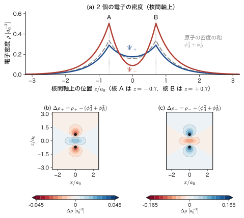
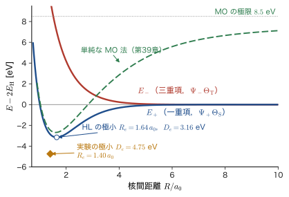
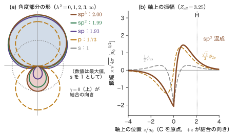
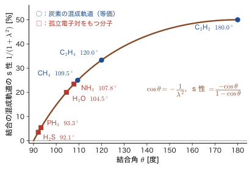

第38章化学結合（1）— 原子価結合法と混成軌道
水素原子は，陽子 1 個と電子 1 個からできた，電気的に中性の粒子である．中性の球どうしのあいだには，近づいたときに電荷の分布がゆがむ効果を別にすれば，古典的な静電気力（Coulomb 力，AD 03 第35章 35.1）は働かない．そのゆがみによる引力（van der Waals 力）は，結合エネルギーにして 1 eV の 1000 分の 1 程度にしかならない．ところが実際には，2 個の水素原子は $0.741\ \text{Å}$ まで近づいて水素分子 $\mathrm{H_2}$ をつくり，これをばらばらの原子に戻すには約 $4.5\ \mathrm{eV}$（1 mol あたり約 $430\ \mathrm{kJ}$）が必要である．古典物理から見れば，まるで説明のつかない強さである．この引力は，第33章 33.5 節で学んだ「電子は区別できず，Pauli の排他原理に従う」という量子力学の要請（と，第35章で見た交換の効果）から生まれる．電子を入れ替えたときに現れる交換の効果が，2 個の水素原子の電子の状態のエネルギーを大きく変えるのである（このほかに，運動エネルギーとポテンシャルエネルギーの変化に分けて理解する見方もあり，38.1 節の終わりで触れる）．1927 年に Heitler（ハイトラー）と London（ロンドン）が水素分子でこのことを初めて計算で示し，Pauling（ポーリング）らがそれを分子一般に広げた．こうして生まれた，結合を「原子の軌道にいる電子どうしがスピン対をつくること」とみる考え方が，原子価結合法（valence-bond method，VB 法）である．
もう 1 つの謎は，炭素である．炭素原子の基底状態の電子配置は $1s^22s^22p^2$ で，不対電子は 2 個しかない（第34章 34.1）．ところがメタン $\mathrm{CH_4}$ では 4 個の水素原子と結合し，しかも 4 本の C–H 結合はまったく同じで，正四面体の頂点の方向（結合角 $109.5^\circ$）へ伸びる．ダイヤモンドやシリコンの結晶が「どの原子からも 4 本の結合が正四面体の頂点へ伸びる」構造をもつのも，同じ理由による．この謎を解く鍵が混成軌道である．2s 軌道と 2p 軌道を混ぜて，特定の方向にふくらんだ軌道を「作り直す」と，等価な 4 本の結合が説明できる．同じ考え方で，エチレン・グラファイト・グラフェンの平面 $120^\circ$ の結合（sp²），アセチレンやカルビンの直線 $180^\circ$ の結合（sp）が説明できる．古典物理の「球と棒でつくった分子模型」では結合の向きは経験則にすぎなかったが，量子力学では，軌道の直交性という条件だけから結合角が決まる．
この章の前半（38.1〜38.4 節）では，VB 法の考え方を水素分子で丁寧に理解し，窒素分子の 3 重結合に広げて，この方法の欠点を整理する．後半（38.5〜38.8 節）では，その欠点を補う混成軌道を，直交規格化の条件から導く．結果は，ダイヤモンド・Si（sp³），グラフェン・グラファイト（sp²），ポリアセチレンやカルビン（sp）といった材料の構造と物性を，「結合の向き」という目で見るための土台になる．次の第39章では，結合を別の見方（分子軌道法）でとらえ，両者を比べる．
- 水素分子の原子価結合関数 $\Psi_\pm=A(1)B(2)\pm A(2)B(1)$ を「電子の区別不能性」から導き，規格化定数 $1/\sqrt{2(1\pm S^2)}$ と，電子密度が核のあいだに集まる（$\Psi_+$）か逃げる（$\Psi_-$）かの違いを説明できること．$\sigma$ 結合の名前の由来
- Heitler–London のエネルギー $E_\pm(R)=2E_{\mathrm H}+(Q\pm X)/(1\pm S^2)$ を導き，この分割では，結合のエネルギーの大部分を古典的な Coulomb 項 $Q$ ではなく交換積分 $X$ が担うことを，数値（$R_e=0.87\ \text{Å}$，$D_e=3.2\ \mathrm{eV}$）で確かめること
- Pauli の原理から，空間関数とスピン関数の組合せ表（一重項＋$\Psi_+$，三重項＋$\Psi_-$）をつくり，「結合をつくる電子対はスピンが反平行である」ことを説明できること
- 窒素分子を例に，不対電子の数から結合の数を数え，$\sigma$ 結合 1 本と $\pi$ 結合 2 本を区別できること
- 原子価結合法の 3 つの欠点（結合角が予想できない，昇位が説明できない，$\sigma$ 結合しか表せない）を，$\mathrm{H_2O}$，$\mathrm{CH_4}$ の具体例で説明できること
- 4 本・3 本・2 本の混成軌道が「互いに直交し，規格化されている」という条件だけから，sp³（$109.47^\circ$，係数 $\tfrac12$），sp²（$120^\circ$，s 成分 $1/\sqrt3$），sp（$180^\circ$，$1/\sqrt2$）を導けること
- Coulson の条件 $1+\lambda^2\cos\theta=0$ から，実測の結合角（$\mathrm{H_2O}$ の $104.5^\circ$ など）に対応する s・p の混合比を計算し，混成が「軌道の選び方」であって物理的な変化ではないことを理解すること
もとにしたノート：望月泰英『物理学ノート 量子力学3』 pp. 75–80．
38.1 原子価結合法 — 水素分子の単結合
38.1.1 問題の設定 — 水素分子のハミルトニアン
2 個の水素原子の原子核（陽子）を A，B と呼び，電子を電子 1，電子 2 と呼ぶ．核 A，B は電子より約 1800 倍重く，同程度のエネルギーをもつときの速さは電子の約 $1/40$（$\sqrt{1836}\approx43$ 分の 1）にしかならない．電子の運動から見れば核はほぼ止まっているので，核を止まっているとみなし，電子だけの Schrödinger 方程式を解く（Born–Oppenheimer 近似．第33章 33.2）．核間距離 $R$ を決めるたびに電子系のエネルギー $\varepsilon(R)$ が決まり，それに核どうしの反発 $e_0^2/(4\pi\varepsilon_0R)$ を加えたものが，核の運動にとってのポテンシャルエネルギー曲線になる（33.3）．曲線の底の位置が分子の平衡核間距離 $R_e$，底の深さが結合エネルギー $D_e$ である．
電子 $i$（$i=1,2$）の位置を $\bm{r}_i$，核 A，B の位置を $\bm{R}_{\mathrm A}$，$\bm{R}_{\mathrm B}$ として，電子 $i$ と核 A，B のあいだの距離を $r_{\mathrm{A}i}=\abs{\bm{r}_i-\bm{R}_{\mathrm A}}$，$r_{\mathrm{B}i}=\abs{\bm{r}_i-\bm{R}_{\mathrm B}}$，2 個の電子のあいだの距離を $r_{12}=\abs{\bm{r}_1-\bm{r}_2}$，核間距離を $R=\abs{\bm{R}_{\mathrm A}-\bm{R}_{\mathrm B}}$ と書く．$\mathrm{H_2}$ のハミルトニアンは，電子の運動エネルギー，電子と核の引力，電子どうしと核どうしの反発の和である：
\begin{equation} \hat{H}=-\frac{\hbar^2}{2m_{\mathrm e}}\left(\nabla_1^2+\nabla_2^2\right) +\frac{e_0^2}{4\pi\varepsilon_0}\left(\frac{1}{r_{12}}+\frac{1}{R}-\frac{1}{r_{\mathrm{A}1}}-\frac{1}{r_{\mathrm{B}1}}-\frac{1}{r_{\mathrm{A}2}}-\frac{1}{r_{\mathrm{B}2}}\right) \label{eq:38-H} \end{equation}である．以下，長さは Bohr 半径 $a_0$，エネルギーは Hartree エネルギー $E_{\mathrm h}$ を単位にする原子単位（第33章 33.1）で数値を書く．そのとき $\hbar=m_{\mathrm e}=e_0=4\pi\varepsilon_0=1$ で，式 \eqref{eq:38-H} の係数がすべて 1 になり，水素原子の基底状態のエネルギーは $E_{\mathrm H}=-\tfrac12E_{\mathrm h}=-13.6\ \mathrm{eV}$ である．
38.1.2 原子価結合法の考え方 — 原子軌道の積
まず，ハミルトニアンの中の電子どうしの反発 $1/r_{12}$ が無いと仮想して，2 個の電子を別々に考えてみよう．電子 1 が核 A に，電子 2 が核 B に束縛されているなら，それぞれの状態は水素原子の 1s 軌道 $\phi_{1s}$（第16章 16.2）で表せる：
\begin{equation} \phi_{1s}(r)=\frac{1}{\sqrt{\pi a_0^3}}\,e^{-r/a_0} \label{eq:38-1s} \end{equation}核 A を中心とする 1s 軌道を $\phi_{\mathrm A}(\bm{r})=\phi_{1s}(r_{\mathrm A})$，核 B を中心とするものを $\phi_{\mathrm B}(\bm{r})=\phi_{1s}(r_{\mathrm B})$（$r_{\mathrm A}$，$r_{\mathrm B}$ は，その点から核 A，B までの距離）と書き，電子 1 の座標を代入した $\phi_{\mathrm A}(\bm{r}_1)$ を $A(1)$，電子 2 の座標を代入した $\phi_{\mathrm B}(\bm{r}_2)$ を $B(2)$ のように略記する．すなわち $A(1)=\phi_{1s}(r_{\mathrm{A}1})$，$B(2)=\phi_{1s}(r_{\mathrm{B}2})$，$A(2)=\phi_{1s}(r_{\mathrm{A}2})$，$B(1)=\phi_{1s}(r_{\mathrm{B}1})$ である．
定義38.1 原子価結合法（VB 法）の基本の考え方
原子価結合法では，ある原子の原子軌道にいる 1 個の電子が，別の原子の原子軌道にいる 1 個の電子とスピン対をつくるとき，2 つの原子のあいだに結合が形成されるとみなす．
電子 1 が A の 1s 軌道に，電子 2 が B の 1s 軌道にいるとすれば，$\mathrm{H_2}$ の波動関数は，それぞれの電子の 1 電子の波動関数（個々の波動関数）の積
\begin{equation} \Psi(1,2)=\phi_{\mathrm A}(\bm{r}_1)\,\phi_{\mathrm B}(\bm{r}_2)=A(1)\,B(2) \label{eq:38-AB} \end{equation}となる（電子間の相互作用を無視した Hartree 積．第33章 33.4）．図38.1(a) は，この状況を描いたものである．
しかし，電子はどれも同じ粒子で，どちらの電子が A のそばにいるかを区別する方法はない（第33章 33.5）．「電子 1 が A，電子 2 が B」という配置 (a) だけでなく，「電子 1 が B，電子 2 が A」という配置 (b)（図38.1(b)，波動関数 $A(2)B(1)$）も，同じ資格で起こりうる．どちらか一方だけを選ぶ理由がないので，2 つの配置を重ね合わせることになる．電子 1 と電子 2 を入れ替える演算子 $\hat{P}_{12}$（33.5）はハミルトニアン \eqref{eq:38-H} と可換なので，固有関数は $\hat{P}_{12}$ の固有関数（対称か反対称）に選ぶことができる．$A(1)B(2)$ と $A(2)B(1)$ は，電子の入れ替えでたがいに移り合う同じ資格の関数なので，これを対称または反対称に重ねたものを近似的な波動関数に使う．そのような重ね合わせは，係数の符号 $\pm$ を選んだ次の 2 つである．
定義38.2 Heitler–London の空間関数 $\Psi_\pm$
\begin{equation} \Psi_\pm(1,2)=A(1)\,B(2)\ \pm\ A(2)\,B(1) \label{eq:38-HL} \end{equation}$\Psi_+$ は電子の入れ替え（$1\leftrightarrow2$）で符号が変わらない（対称），$\Psi_-$ は符号が変わる（反対称）．$\pm$ の符号が，結合性（bonding）の関数か反結合性（antibonding）の関数かを決める（38.1.4 節）．波動関数がこの形の $\Psi_+$ のとき，その電子分布を $\sigma$ 結合という．
式 \eqref{eq:38-HL} は，電子 1，2 の座標（空間の部分）だけの関数である．電子にはスピンもあるので，波動関数全体はスピンの部分もふくめて Pauli の原理を満たさなければならない．それは次の 38.2 節で調べる．ここでは，空間部分だけをまず考える．
38.1.3 規格化と重なり積分
式 \eqref{eq:38-HL} は規格化されていない．$A$ と $B$ は別々の核を中心とする軌道で，直交していないので，規格化定数は $1/\sqrt{2}$ ではない．次の量が現れる．
定義38.3 重なり積分 $S$
\begin{equation} S\equiv\int\phi_{\mathrm A}(\bm{r})\,\phi_{\mathrm B}(\bm{r})\,\dd\bm{r} \label{eq:38-S} \end{equation}を，2 つの原子軌道の重なり積分（overlap integral）という．軌道が実数のとき，$S$ は実数で，2 つの軌道が空間でどれだけ重なっているかを表す（$S=0$ で直交，$S=1$ で完全に一致）．
1s 軌道どうしの重なり積分は，核間距離 $R$（$a_0$ 単位）の関数として
\begin{equation} S(R)=e^{-R}\left(1+R+\frac{R^2}{3}\right) \label{eq:38-SR} \end{equation}である（楕円座標を使った導出は次章．第39章と，シミュレーター重なり積分）．$R=0$ で $S=1$，$R\to\infty$ で $S\to0$ である．$\mathrm{H_2}$ の実測の核間距離 $R=1.40\,a_0$（$0.741\ \text{Å}$）では $S=0.753$ と，かなり大きい．
導出：$\Psi_\pm$ の規格化定数
式 \eqref{eq:38-HL} の絶対値の 2 乗を積分する．軌道 $A$，$B$ は個別には規格化されている（$\int A^2\,\dd\bm{r}=\int B^2\,\dd\bm{r}=1$）．
\begin{align} \braket{\Psi_\pm}{\Psi_\pm}&=\iint\bigl[A(1)B(2)\pm A(2)B(1)\bigr]^2\,\dd\bm{r}_1\dd\bm{r}_2\notag\\ &=\iint A(1)^2B(2)^2\,\dd\bm{r}_1\dd\bm{r}_2+\iint A(2)^2B(1)^2\,\dd\bm{r}_1\dd\bm{r}_2\pm2\iint A(1)B(2)A(2)B(1)\,\dd\bm{r}_1\dd\bm{r}_2 \label{eq:38-norm1} \end{align}第 1 項は $\int A(1)^2\dd\bm{r}_1\cdot\int B(2)^2\dd\bm{r}_2=1\cdot1=1$，第 2 項も同様に $1$．第 3 項は，電子 1 だけの積分と電子 2 だけの積分に分かれ，$\int A(1)B(1)\,\dd\bm{r}_1\cdot\int B(2)A(2)\,\dd\bm{r}_2=S\cdot S=S^2$ になる．したがって
\begin{equation} \braket{\Psi_\pm}{\Psi_\pm}=2\pm2S^2=2\,(1\pm S^2),\qquad N_\pm=\frac{1}{\sqrt{2\,(1\pm S^2)}} \label{eq:38-Npm} \end{equation}で，規格化された関数は $N_\pm\Psi_\pm$ である．$S\to0$（核が遠く離れた極限）では $N_\pm\to1/\sqrt2$ となり，$\Psi_\pm$ は $\tfrac{1}{\sqrt2}[A(1)B(2)\pm A(2)B(1)]$ に近づく．
（導出終わり）
38.1.4 結合性と反結合性 — 電子密度で見る
$\Psi_+$ と $\Psi_-$ は，一方が結合性，他方が反結合性だという．その違いは，「電子の入れ替えで関数を足すか引くか」だけである．この小さな符号の違いが，電子がどこに見つかるかという電子密度の違いになる．
導出：$\Psi_\pm$ の電子密度
点 $\bm{r}$ に電子が見つかる密度（2 個の電子の合計）を $\rho(\bm{r})$ とする．2 個の電子は区別できないので，電子 1 が $\bm{r}$ にいるときの確率密度を，電子 2 の座標について積分して 2 倍すればよい：$\rho_\pm(\bm{r})=2\int\abs{N_\pm\Psi_\pm(\bm{r},\bm{r}_2)}^2\,\dd\bm{r}_2$．式 \eqref{eq:38-norm1} と同じ計算を，電子 1 の座標を固定したまま電子 2 の座標だけについて行うと，
$$ \int\bigl[A(\bm{r})B(2)\pm A(2)B(\bm{r})\bigr]^2\dd\bm{r}_2=A(\bm{r})^2\underbrace{\int B^2}_{1}+B(\bm{r})^2\underbrace{\int A^2}_{1}\pm2A(\bm{r})B(\bm{r})\underbrace{\int A B\,\dd\bm{r}_2}_{S} $$となる．よって $2N_\pm^2=1/(1\pm S^2)$ を使って
\begin{equation} \rho_\pm(\bm{r})=\frac{\phi_{\mathrm A}(\bm{r})^2+\phi_{\mathrm B}(\bm{r})^2\pm2S\,\phi_{\mathrm A}(\bm{r})\phi_{\mathrm B}(\bm{r})}{1\pm S^2} \label{eq:38-rho} \end{equation}を得る（$\int\rho_\pm\,\dd\bm{r}=(2\pm2S^2)/(1\pm S^2)=2$ で，電子は 2 個）．
（導出終わり）
式 \eqref{eq:38-rho} の分子の最初の 2 項は，「A の 1s 軌道の電子雲」と「B の 1s 軌道の電子雲」の単なる和，つまり 2 つの水素原子がそのまま近づいたときの電子密度である．結合の違いを生むのは第 3 項 $\pm2S\phi_{\mathrm A}\phi_{\mathrm B}$ で，「1 個の電子が A にいる振幅」と「B にいる振幅」の干渉項にあたる（AD 03 の波の干渉と同じ考え方．第11章 11.6）．核のあいだの領域では $\phi_{\mathrm A}$ も $\phi_{\mathrm B}$ も正で同程度の大きさなので，$\Psi_+$ ではこの項が電子密度を増やし，$\Psi_-$ では減らす．図38.2 は，$R=1.4\,a_0$ でこれを計算したものである．

核のあいだにたまった電子の雲は，2 つの正の核を同時に引きつけて，核どうしの反発を上回る引力を生む．逆に $\Psi_-$ では，電子が核のあいだから追い出され，核どうしがむき出しになって反発する．これが，$\Psi_+$ が結合性，$\Psi_-$ が反結合性の関数と呼ばれ，エネルギーの大小が $E(\Psi_-)\gt E(\Psi_+)$ となる理由の直観である（数値は次節）．
注意：電子は「核のあいだで増える」だけではない
図38.2 (b) を見ると，$\Psi_+$ では核のすぐそばの電子密度は，原子の密度の和より減っている．電子は核の近くから核のあいだへ，「移る」のであって，どこかから湧いてくるのではない（$\int\Delta\rho\,\dd\bm{r}=0$）．また，核のあいだの増加は $R=1.4\,a_0$ で中点の密度が約 $12\ \%$ 増えるだけで，「共有結合は電子が結合の真ん中に集まったもの」という図から受ける印象よりずっと控えめである．結合の主な原因は，次節で見るように，密度の変化そのものより，この変化を生む交換の項のエネルギーである．
考察：$\Psi_-$ は 2 個の電子が同じ点に来ることを許さない
2 個の電子を同じ点 $\bm{r}$ に置くと，$\Psi_-(\bm{r},\bm{r})=A(\bm{r})B(\bm{r})-A(\bm{r})B(\bm{r})=0$ である．$\Psi_-$ は，2 個の電子の座標が一致する面 $\bm{r}_1=\bm{r}_2$ の全体で 0 になる．これに対して $\Psi_+(\bm{r},\bm{r})=2A(\bm{r})B(\bm{r})$ は，核のあいだで 0 でない．空間部分が反対称の状態（次節で見るように，スピンが平行な三重項）では，電子どうしが同じ場所に近づけない，というのが Pauli の原理の現れである（この「電子のいない領域」を交換孔という）．$\Psi_-$ の電子密度が核のあいだで減ることは，この性質と整合している．反対に $\Psi_+$（スピンが反平行の一重項）は，2 個の電子が 2 つの核のあいだにいっしょに入り込める関数である．
イメージ：$\sigma$ 結合という名前
$\Psi_+$ の電子分布は，2 つの核を結ぶ軸（結合軸）のまわりに円筒対称である．結合軸のまわりの角運動量の成分（第21章）が 0 の状態で，球対称な s 軌道が回転して変わらないのと同じ性質をもつ．そこで，s のギリシャ文字 $\sigma$ をとって$\sigma$ 結合と名付けた．同様に，軸のまわりの角運動量の成分の大きさが 1（節面が 1 枚．p 軌道と同じ）の結合を $\pi$ 結合，2 の結合を $\delta$ 結合と呼ぶ（38.3 節）．なお，反結合性の関数 $\Psi_-$ も軸のまわりには円筒対称で，$\sigma^*$（$\sigma$ の反結合性）と書かれる．
例題38.1 $\mathrm{H_2}$ の $\Psi_\pm$ の規格化と核の中点の密度
核間距離を $R=1.40\,a_0$ とする．(1) 重なり積分 $S$ を求めよ．(2) 規格化定数 $N_+$，$N_-$ を求めよ．(3) 2 つの核の中点での電子密度 $\rho_\pm$ を，原子の密度の和 $\phi_{\mathrm A}^2+\phi_{\mathrm B}^2$ と比べよ．
解答 (1) 式 \eqref{eq:38-SR} に $R=1.40$ を代入する．$e^{-1.40}=0.246597$，$1+R+R^2/3=1+1.40+0.653333=3.053333$ だから，$S=0.246597\times3.053333=0.7529$．
(2) $S^2=0.566923$ だから，$1+S^2=1.566923$，$1-S^2=0.433077$．式 \eqref{eq:38-Npm} より $N_+=1/\sqrt{2\times1.566923}=1/\sqrt{3.133846}=0.5649$，$N_-=1/\sqrt{2\times0.433077}=1/\sqrt{0.866154}=1.0745$．$S\to0$ の極限の値 $1/\sqrt2=0.7071$ に対して，$\Psi_+$ は小さく，$\Psi_-$ は大きい．$\Psi_-$ では 2 つの項がよく打ち消し合うので，規格化のためにそれだけ大きな係数が必要になるからである．
(3) 中点では $r_{\mathrm A}=r_{\mathrm B}=R/2=0.70\,a_0$ だから $\phi_{\mathrm A}=\phi_{\mathrm B}=e^{-0.70}/\sqrt{\pi}$（原子単位）で，$\phi_{\mathrm A}^2=e^{-1.40}/\pi=0.246597/3.141593=0.078497$．原子の密度の和は $2\times0.078497=0.15699\ a_0^{-3}$．式 \eqref{eq:38-rho} より，
$$ \rho_\pm=\frac{2\phi_{\mathrm A}^2(1\pm S)}{1\pm S^2}=0.15699\times\frac{1\pm0.7529}{1\pm0.5669} $$で，$\rho_+=0.15699\times\dfrac{1.7529}{1.5669}=0.1756\ a_0^{-3}$（原子の密度の和の $1.12$ 倍），$\rho_-=0.15699\times\dfrac{0.2471}{0.4331}=0.0896\ a_0^{-3}$（$0.57$ 倍）である．中点で $\Psi_+$ は $12\ \%$ 増え，$\Psi_-$ は $43\ \%$ 減る．
38.1.5 Heitler–London のエネルギー — 結合のエネルギーを担うのは交換積分
それでは $\Psi_\pm$ のエネルギーを計算して，どちらが結合をつくるのかを数値で確かめよう．ハミルトニアン \eqref{eq:38-H} にはスピンが現れないので，スピンの部分を掛けた全波動関数のエネルギーの期待値は，空間関数 $\Psi_\pm$ のエネルギーの期待値に等しい（スピン関数は規格化されているとする）．変分法（第30章）と同じく，$E_\pm=\mel{\Psi_\pm}{\hat{H}}{\Psi_\pm}/\braket{\Psi_\pm}{\Psi_\pm}$ を計算する．
導出：$E_\pm=2E_{\mathrm H}+(Q\pm X)/(1\pm S^2)$
原子単位で書く．式 \eqref{eq:38-H} のハミルトニアンを，2 通りに分ける．第 1 は，電子 1 を核 A のまわりに，電子 2 を核 B のまわりに置いた「水素原子 2 個のハミルトニアン」と，残りの相互作用 $\hat{V}$ への分割で，
\begin{equation} \hat{H}=\hat{H}_{\mathrm A}(1)+\hat{H}_{\mathrm B}(2)+\hat{V},\qquad \hat{V}=\frac1R+\frac{1}{r_{12}}-\frac{1}{r_{\mathrm{B}1}}-\frac{1}{r_{\mathrm{A}2}} \label{eq:38-split1} \end{equation}である．ここで $\hat{H}_{\mathrm A}(1)=-\tfrac12\nabla_1^2-1/r_{\mathrm{A}1}$，$\hat{H}_{\mathrm B}(2)=-\tfrac12\nabla_2^2-1/r_{\mathrm{B}2}$．第 2 は，電子 1 と電子 2 の役目を入れ替えた分割で，
\begin{equation} \hat{H}=\hat{H}_{\mathrm B}(1)+\hat{H}_{\mathrm A}(2)+\hat{V}',\qquad \hat{V}'=\frac1R+\frac{1}{r_{12}}-\frac{1}{r_{\mathrm{A}1}}-\frac{1}{r_{\mathrm{B}2}} \label{eq:38-split2} \end{equation}である．どちらも，右辺を展開すると式 \eqref{eq:38-H} に戻ることは，項を並べて確かめられる．1s 軌道は水素原子の固有関数だから，$\hat{H}_{\mathrm A}(1)A(1)=E_{\mathrm H}A(1)$，$\hat{H}_{\mathrm B}(2)B(2)=E_{\mathrm H}B(2)$，$\hat{H}_{\mathrm B}(1)B(1)=E_{\mathrm H}B(1)$，$\hat{H}_{\mathrm A}(2)A(2)=E_{\mathrm H}A(2)$ である（$E_{\mathrm H}=-\tfrac12$）．したがって，
$$ \hat{H}\,A(1)B(2)=\bigl(2E_{\mathrm H}+\hat{V}\bigr)A(1)B(2),\qquad \hat{H}\,A(2)B(1)=\bigl(2E_{\mathrm H}+\hat{V}'\bigr)A(2)B(1). $$次の 2 つの行列要素を計算する（$A$，$B$ は規格化されている）．
\begin{align} H_{11}&\equiv\mel{A(1)B(2)}{\hat{H}}{A(1)B(2)}=2E_{\mathrm H}\cdot1+\mel{A(1)B(2)}{\hat{V}}{A(1)B(2)}\equiv2E_{\mathrm H}+Q, \label{eq:38-H11}\\ H_{12}&\equiv\mel{A(1)B(2)}{\hat{H}}{A(2)B(1)}=2E_{\mathrm H}\braket{A(1)B(2)}{A(2)B(1)}+\mel{A(1)B(2)}{\hat{V}'}{A(2)B(1)}\equiv2E_{\mathrm H}S^2+X. \label{eq:38-H12} \end{align}式 \eqref{eq:38-H12} で $\braket{A(1)B(2)}{A(2)B(1)}=\int A(1)B(1)\dd\bm{r}_1\cdot\int B(2)A(2)\dd\bm{r}_2=S^2$ を使った．電子 1 と電子 2 の名前を付け替えてもハミルトニアンは変わらないので，$\mel{A(2)B(1)}{\hat{H}}{A(2)B(1)}=H_{11}$，$\mel{A(2)B(1)}{\hat{H}}{A(1)B(2)}=H_{12}$ である．よって $\Psi_\pm=A(1)B(2)\pm A(2)B(1)$ について，
$$ \mel{\Psi_\pm}{\hat{H}}{\Psi_\pm}=H_{11}+H_{11}\pm H_{12}\pm H_{12}=2\,(H_{11}\pm H_{12}),\qquad \braket{\Psi_\pm}{\Psi_\pm}=2\,(1\pm S^2) $$となり，
\begin{equation} E_\pm=\frac{H_{11}\pm H_{12}}{1\pm S^2}=\frac{2E_{\mathrm H}(1\pm S^2)+Q\pm X}{1\pm S^2}=2E_{\mathrm H}+\frac{Q\pm X}{1\pm S^2} \label{eq:38-Epm} \end{equation}を得る．
（導出終わり）
式 \eqref{eq:38-Epm} は，結合のエネルギーが 2 つの積分 $Q$ と $X$ だけで決まることを示している．具体的に書くと，
\begin{align} Q(R)&=\frac1R+U_{\mathrm{AB}}-2\,\mel{\phi_{\mathrm A}}{r_{\mathrm B}^{-1}}{\phi_{\mathrm A}},\label{eq:38-Q}\\ X(R)&=\frac{S^2}{R}+J_{\mathrm{AB}}-2S\,\mel{\phi_{\mathrm A}}{r_{\mathrm A}^{-1}}{\phi_{\mathrm B}}\label{eq:38-X} \end{align}である．$U_{\mathrm{AB}}=\mel{AB}{r_{12}^{-1}}{AB}$ と $J_{\mathrm{AB}}=\mel{AB}{r_{12}^{-1}}{BA}$ は，第35章の Coulomb 積分と交換積分（35.3）を 2 つの原子軌道 $A$，$B$ について書いたものである（軌道が直交していなくても定義は同じ）．$Q$ は，A の電子雲と B の電子雲の（核も含めた）静電エネルギーで，古典的に理解できるCoulomb 項である．$X$ は，重なり密度 $\phi_{\mathrm A}\phi_{\mathrm B}$（2 つの軌道が重なる場所にだけ値をもつ）どうしの相互作用で，古典物理に対応物のない交換項である．
記号：$Q$，$X$ と $U_{ab}$，$J_{ab}$ は別のもの
ここで導入した $Q$，$X$ は，Heitler–London の関数に対する「Coulomb 積分」と「交換積分」だが，核間の反発 $1/R$ や電子–核の引力の項もすべて含んでいる．電子間反発だけの積分である $U_{ab}$，$J_{ab}$（第35章）とは別の量なので，記号を分けた．また，第35章の交換積分は Szabo–Ostlund の本などの $K_{ab}$ にあたり，全角運動量の $J$ とも別物である（35.3）．
1s 軌道 \eqref{eq:38-1s}（$\zeta=1$）の場合，積分は楕円座標で計算でき（次章），$R$ を $a_0$ 単位として，$S$ は式 \eqref{eq:38-SR}，その他の量は次のようになる（原子単位）：
\begin{align} \mel{\phi_{\mathrm A}}{r_{\mathrm B}^{-1}}{\phi_{\mathrm A}}&=\frac1R-e^{-2R}\left(1+\frac1R\right),\qquad \mel{\phi_{\mathrm A}}{r_{\mathrm A}^{-1}}{\phi_{\mathrm B}}=e^{-R}(1+R),\notag\\ U_{\mathrm{AB}}&=\frac1R-e^{-2R}\left(\frac1R+\frac{11}{8}+\frac{3R}{4}+\frac{R^2}{6}\right). \label{eq:38-ints} \end{align}交換積分 $J_{\mathrm{AB}}$ は Sugiura（1927 年）が初めて求めた，指数積分関数 $\mathrm{Ei}$ を含む式で，ここでは書かない．数値を，$Q$，$X$ とあわせて表38.1 に示す．
| $R/a_0$ | $S$ | $Q$（eV） | $X$（eV） | $E_+-2E_{\mathrm H}$（eV） | $E_--2E_{\mathrm H}$（eV） |
|---|---|---|---|---|---|
| 1.00 | 0.858 | $+2.61$ | $-2.44$ | $+0.10$ | $+19.18$ |
| 1.40 | 0.753 | $-0.06$ | $-4.44$ | $-2.87$ | $+10.10$ |
| 1.64 | 0.686 | $-0.45$ | $-4.19$ | $-3.16$ | $+7.05$ |
| 2.00 | 0.586 | $-0.52$ | $-3.27$ | $-2.82$ | $+4.19$ |
| 3.00 | 0.349 | $-0.19$ | $-1.08$ | $-1.13$ | $+1.02$ |
| 5.00 | 0.097 | $-0.009$ | $-0.061$ | $-0.069$ | $+0.052$ |

表と図から，次のことが読み取れる．
- Coulomb 項 $Q$ は小さい．$R\gtrsim1.4\,a_0$ では $\abs{Q}\lesssim0.5\ \mathrm{eV}$ で，実測の結合エネルギー（約 4.5 eV）の 1 割ほどにしかならない．中性の原子の電子雲どうしの古典的な静電エネルギーはほとんど 0，というのが冒頭の問いの答えである．
- 結合をつくるのは交換項 $X$ である．$X$ は $R\approx1.4\sim1.6\,a_0$ で $-4\ \mathrm{eV}$ を超える大きな負の値をとる．$\Psi_+$ ではこの $X$ がエネルギーを下げ，$\Psi_-$ では上げる．
- $E_+$ には極小がある：$R_e=1.64\,a_0=0.869\ \text{Å}$，$D_e=3.16\ \mathrm{eV}$．実験は $R_e=0.741\ \text{Å}$，$D_e=4.75\ \mathrm{eV}$ だから，1s 軌道を水素原子のまま使った最も単純な近似としては，結合の存在と大きさの見当（実験の約 2/3）を与える．
- $E_-$ には極小がなく，$R$ が小さくなるほど単調に高くなる．$\Psi_-$ の状態では 2 個の水素原子は反発し，結合をつくらない．
なお，エネルギーを $Q$ と $X$ に分けるのは，Heitler–London の関数に対する形式的な分割であり，結合の物理的な原因が「交換」だけにあるという意味ではない．同じエネルギーを運動エネルギーとポテンシャルエネルギーに分けて解析する見方もあり，そこでは，結合の形成が，軌道が核のあいだで縮むことによる運動エネルギーの変化を含む過程として理解される（Ruedenberg，1962 年）．ここでは，Pauli の原理が空間関数の対称性を決め，その違いが一重項（$\Psi_+$）と三重項（$\Psi_-$）のエネルギー差を生む，という点をおさえておこう．
この近似は，軌道の形と混ぜ方を工夫すると，よくなる．1s 軌道の指数を変分パラメーターにして，核の電荷を有効的に $\zeta\approx1.17$ に増やす（軌道が縮む）と，$D_e\approx3.8\ \mathrm{eV}$，$R_e\approx0.75\ \text{Å}$ となる（Wang，1928 年）．さらに，電子 2 個が同じ核のまわりにいるイオン構造 $\mathrm{H^+H^-}$ の関数を少し混ぜる（Weinbaum，1933 年）と，$D_e$ は 4 eV 台に達する．
例題38.2 $R=1.40\,a_0$ での $E_\pm$
$R=1.40\,a_0$ で，式 \eqref{eq:38-Q}，\eqref{eq:38-X} の積分の値は，$S=0.7529$，$Q=-0.00227\,E_{\mathrm h}$，$X=-0.16300\,E_{\mathrm h}$ である．式 \eqref{eq:38-Epm} から $E_\pm-2E_{\mathrm H}$ を eV で求め，結合をつくる状態を答えよ．$E_{\mathrm h}=27.2114\ \mathrm{eV}$ とする．
解答 $S^2=0.56692$．$\Psi_+$：分子は $Q+X=-0.00227-0.16300=-0.16527\,E_{\mathrm h}$，分母は $1+S^2=1.56692$ だから $E_+-2E_{\mathrm H}=-0.16527/1.56692=-0.10547\,E_{\mathrm h}=-2.870\ \mathrm{eV}$．$\Psi_-$：分子は $Q-X=-0.00227+0.16300=+0.16073\,E_{\mathrm h}$，分母は $1-S^2=0.43308$ だから $E_--2E_{\mathrm H}=+0.16073/0.43308=+0.37112\,E_{\mathrm h}=+10.10\ \mathrm{eV}$．
$\Psi_+$ は 2 個の水素原子がばらばらのとき（$0$）より 2.87 eV 低い．したがって結合をつくる状態は $\Psi_+$（に一重項のスピン関数を掛けたもの）である．$\Psi_-$ は 10.10 eV も高く，2 個の水素原子は強く反発する．エネルギー差 $E_--E_+=12.97\ \mathrm{eV}$ のうち，交換項が寄与する分は，$Q$ の寄与がほとんど 0 なので，ほぼ全部である．
考察：VB 法と MO 法 — 遠く離した極限での違い
次章の分子軌道法（MO 法）は，まず 2 個の電子が分子全体に広がる 1 つの軌道（$\sigma_g$ 軌道）に入ると考える．同じ 1s 軌道（$\zeta=1$）を使った最も単純な MO 法（図38.3 の緑の破線）では，$R_e$ 付近の結合エネルギーは約 2.7 eV で，Heitler–London の 3.2 eV より小さい．しかし，本当に大きな違いは，2 個の原子を遠く引き離す極限に現れる．この MO の波動関数は，「2 個の電子が別々の原子にいる（共有結合的）」項と「2 個の電子が同じ原子にいる（イオン的：$\mathrm{H^+H^-}$）」項を，等しい重みで含んでいる．そのため，$R\to\infty$ で 2 個の水素原子に分かれず，同じ原子の 1s 軌道に電子 2 個が入ったときの電子間反発 $\tfrac58E_{\mathrm h}$ の半分だけ，すなわち $\tfrac{5}{16}E_{\mathrm h}=0.3125\,E_{\mathrm h}=8.5\ \mathrm{eV}$ も，$2E_{\mathrm H}$ より高いエネルギーに向かう．Heitler–London の関数は $R\to\infty$ で正しく 2 個の水素原子（$E\to2E_{\mathrm H}$）に分かれる．VB 法は「結合が切れる」ことを正しく扱える．これは，前章（第37章）で見た，制限 Hartree–Fock 法が $\mathrm{H_2}$ の解離を正しく記述できないことと同じ現象である．MO の関数に「電子 2 個が反結合性軌道に入った」配置を混ぜて（配置間相互作用）イオン項の重みを調整すると，この弱点は解消し，結果は VB 法にイオン構造を混ぜたものと一致する．
応用：磁性体の交換相互作用も同じ仕組み
2 個のスピンの向きが，ハミルトニアンにスピンが現れないのにエネルギーを決める——これは磁性の起源でもある．$\mathrm{H_2}$ では一重項 $\Psi_+\Theta_{\mathrm S}$ と三重項 $\Psi_-\Theta_{\mathrm{T}}$（$\Theta_{\mathrm T}$ は三重項のスピン関数 3 個のどれか）のエネルギー差 $E_--E_+$ が，スピンの向きの組合せで決まる．これを 2 個のスピン $\hat{\bm{S}}_1$，$\hat{\bm{S}}_2$ のあいだの有効な結合 $\hat{H}_{\mathrm{eff}}=\mathcal{J}\,\hat{\bm{S}}_1\cdot\hat{\bm{S}}_2/\hbar^2$ で表すと，$\hat{\bm{S}}_1\cdot\hat{\bm{S}}_2$ の固有値が三重項で $+\hbar^2/4$，一重項で $-3\hbar^2/4$ だから（第25章 25.8），$\mathcal{J}=E_{\mathrm T}-E_{\mathrm S}=E_--E_+$ となる．本書では $\mathcal{J}\gt0$ を反強磁性（一重項が安定）の結合とする（強磁性の Heisenberg 模型を $-2J\hat{\bm{S}}_i\cdot\hat{\bm{S}}_j$ と書く流儀とは符号の向きが逆である）．MnO や NiO などの遷移金属酸化物の反強磁性は，酸素を介して隣り合う磁性イオンの $d$ 電子どうしがつくる超交換（superexchange）によるもので，$\mathrm{H_2}$ の一重項と三重項の分裂と同じ「交換」の仕組みに由来する．強磁性体の Curie 温度も，電子どうしの交換相互作用が源である．
38.2 スピン波動関数と Pauli の原理 — 電子対はなぜ反平行か
38.2.1 全波動関数は反対称でなければならない
前節の $\Psi_\pm$ は，電子の座標（空間の部分）だけの関数だった．Pauli の原理（第33章 33.5）は，電子の座標とスピン変数をあわせた波動関数全体について，2 個の電子を入れ替えると符号が変わる（反対称）ことを要求する．電子 $i$ の空間座標 $\bm{r}_i$ とスピン変数 $\sigma_i$ をあわせて「$i$」と略記すると，
\begin{equation} \Psi(1,2)=-\Psi(2,1) \label{eq:38-pauli} \end{equation}である．ハミルトニアン \eqref{eq:38-H} にはスピンが現れないから，波動関数は空間部分とスピン部分の積 $\Psi(1,2)=\Psi_{\mathrm{orb}}(\bm{r}_1,\bm{r}_2)\,\Theta(\sigma_1,\sigma_2)$ の形にとれる（33.5.3）．空間部分として $\Psi_+$ をとり，スピン部分を $\Theta$ と書くと，
\begin{align} \Psi(1,2)&=\bigl\{A(1)B(2)+A(2)B(1)\bigr\}\,\Theta(1,2),\notag\\ \Psi(2,1)&=\bigl\{A(2)B(1)+A(1)B(2)\bigr\}\,\Theta(2,1)=\bigl\{A(1)B(2)+A(2)B(1)\bigr\}\,\Theta(2,1) \label{eq:38-PsiTheta} \end{align}である（2 行目では，$\{\ \}$ の中の 2 項の順序を入れ替えても値が変わらない，すなわち $\Psi_+$ が対称なことを使った）．式 \eqref{eq:38-pauli} が成り立つためには，$\{\ \}$ が 0 でないので，
\begin{equation} \Theta(1,2)=-\Theta(2,1) \label{eq:38-Theta-anti} \end{equation}でなければならない．つまり，空間部分が対称ならスピン部分は反対称である．空間部分が $\Psi_-$（反対称）の場合も，同じ計算で，スピン部分は $\Theta(1,2)=+\Theta(2,1)$（対称）でなければならないことがわかる．
記号：$\sigma$ の使い分け
ギリシャ文字の $\sigma$ は，この章で 3 つの意味に使われる：(i) スピン変数 $\sigma_i=\pm\tfrac12$（第23章 23.5），(ii) Pauli 行列 $\sigma_x,\sigma_y,\sigma_z$（添字つき），(iii) $\sigma$ 結合の $\sigma$．混乱を避けるため，2 電子のスピン関数は $\Theta(\sigma_1,\sigma_2)$（第33章と同じ）と書く．
法則38.1 2 個の Fermi 粒子（電子）の空間関数とスピン関数の対称性
2 個の電子の全波動関数は，電子の入れ替えで符号を変える．したがって，
- 空間部分が対称（$\Psi_+$）ならば，スピン部分は反対称：$\Theta(1,2)=-\Theta(2,1)$，
- 空間部分が反対称（$\Psi_-$）ならば，スピン部分は対称：$\Theta(1,2)=+\Theta(2,1)$．
（2 個の Bose 粒子であれば，全体が対称なので，空間部分とスピン部分の対称性が一致する組合せだけが許される．）
38.2.2 2 個の電子のスピン関数
スピンが上向き（$s_z=+\tfrac12$，$\uparrow$）の状態を表すスピン関数を $\alpha$，下向き（$s_z=-\tfrac12$，$\downarrow$）の状態を $\beta$ と書く（$\alpha=\ket{\uparrow}$，$\beta=\ket{\downarrow}$．第23章 23.5）．電子 1 のスピンが上向き，電子 2 が下向きの状態は $\alpha(1)\beta(2)$，その逆は $\alpha(2)\beta(1)$ である．この 2 つの一次結合のうち，電子の入れ替えで対称か反対称になるものは，空間関数 \eqref{eq:38-HL} と同じ構成で，
\begin{equation} \Theta_\pm(1,2)=\alpha(1)\beta(2)\pm\alpha(2)\beta(1)\qquad(\uparrow\downarrow\pm\downarrow\uparrow) \label{eq:38-Thetapm} \end{equation}である．$\Theta_+$ は電子の入れ替えで対称，$\Theta_-$ は反対称である．電子（Fermi 粒子）は全体が反対称でなければならないから，空間部分が対称の $\Psi_+$ と組み合わせるスピン部分は，式 \eqref{eq:38-Theta-anti} を満たす反対称の $\Theta_-$ である（空間部分が反対称の $\Psi_-$ のときは，対称なスピン関数を使う．表38.2）．全体が対称でよい Bose 粒子ならば，空間部分が対称のときスピン部分も対称の $\Theta_+$ でなければならない．粒子の種類が「どの型のスピン関数が使えるか」を決めるのであって，符号 $\pm$ そのものが粒子の種類を決めるのではない．規格化すると（$\braket{\Theta_-}{\Theta_-}=1+1=2$ だから），
\begin{equation} \Theta_{\mathrm S}(1,2)=\frac{1}{\sqrt2}\bigl\{\alpha(1)\beta(2)-\alpha(2)\beta(1)\bigr\} \label{eq:38-singlet} \end{equation}である．これが 2 個のスピン $\tfrac12$ の合成のうち全スピン $S=0$ の一重項（singlet）で，$\hat{S}_z$ の固有値は $0$（$\alpha\beta$ と $\beta\alpha$ を同じ重みで含む）である（第25章 25.8）．$S=0$ であることは，全スピンの昇降演算子 $\hat{S}_\pm=\hat{S}_{1\pm}+\hat{S}_{2\pm}$ を作用させて確かめられる．$\hat{S}_-\alpha=\hbar\beta$，$\hat{S}_-\beta=0$ より $\hat{S}_-\alpha(1)\beta(2)=\hbar\,\beta(1)\beta(2)$，$\hat{S}_-\alpha(2)\beta(1)=\hbar\,\beta(2)\beta(1)$ だから，$\hat{S}_-\Theta_{\mathrm S}=\tfrac{\hbar}{\sqrt2}\bigl\{\beta(1)\beta(2)-\beta(2)\beta(1)\bigr\}=0$．$\hat{S}_+$ でも同様に $0$ になる．$\hat{S}_\pm\Theta_{\mathrm S}=0$ で，しかも $\hat{S}_z$ の固有値が $0$ の状態は，全スピン $S=0$ の状態に限られる．残りの 3 つ——$\alpha(1)\alpha(2)$，$\beta(1)\beta(2)$，$\tfrac{1}{\sqrt2}\{\alpha(1)\beta(2)+\alpha(2)\beta(1)\}$——は，どれも入れ替えで対称で，全スピン $S=1$ の三重項（triplet）をつくる．
38.2.3 組合せ表 — 結合するのは一重項だけ
空間部分は $\Psi_+$（対称）と $\Psi_-$（反対称），スピン部分は一重項（反対称）と三重項（対称）の 2 種類だから，組合せは 4 通りある．そのうち全体が反対称になるのは 2 通りだけである（表38.2）．
| 空間関数 | スピン関数 | 全体の対称性 | 許されるか | 状態 | エネルギー |
|---|---|---|---|---|---|
| $\Psi_+$（対称） | 一重項 $\Theta_{\mathrm S}$（反対称，$S=0$，1 個） | 反対称 | 許される | 結合性（$\sigma$ 結合） | $E_+$（引力） |
| $\Psi_-$（反対称） | 三重項（対称，$S=1$，3 個） | 反対称 | 許される | 反結合性（$\sigma^*$） | $E_-$（斥力） |
| $\Psi_+$（対称） | 三重項（対称） | 対称 | 許されない | — | — |
| $\Psi_-$（反対称） | 一重項（反対称） | 対称 | 許されない | — | — |
表から次のことが言える．
- 結合性の空間関数 $\Psi_+$ と組めるスピン関数は，一重項 $\Theta_{\mathrm S}$，すなわちスピンが反平行の電子対だけである（$\Psi_+\Theta_{\mathrm S}$）．これが，VB 法の「電子対結合」（Lewis の電子対）の中身である．
- スピンが平行な 2 個の電子（$\alpha\alpha$ や $\beta\beta$，三重項）は，空間関数が反対称の $\Psi_-$ としか組めない．$E_-$ は結合をつくらないので，スピンが平行な電子対は結合できない．
考察：電子対について — 同じ向きのスピンでは $\Theta=0$ になる
電子 1，2 のスピンが同じ向きのとき，たとえば両方とも上向き（$\alpha(1)$ も $\alpha(2)$ も同じ関数）のとき，反対称のスピン関数は作れない．実際，式 \eqref{eq:38-singlet} と同じ形の反対称の組 $\alpha(1)\alpha(2)-\alpha(2)\alpha(1)$ は 0 になる（$\alpha(1)\alpha(2)$ と $\alpha(2)\alpha(1)$ は同じ積である）．反対称のスピン関数が存在しないので，結合性の $\Psi_+$ にスピン関数をつけて全体を反対称にすることができない．全波動関数が 0 になってしまう——電子が「その状態にいることができない」——ということで，これが「スピンが同じ向きの電子は結合できない」ことの，Pauli の原理からの表現である．
同じことを，反対称化の操作で確かめよう．$\Psi_+\alpha(1)\alpha(2)$ は空間もスピンも対称で，全体が対称だから，これを反対称化する（$\Psi(1,2)-\Psi(2,1)$ をつくる）と 0 になる．一方，$\Psi_-\alpha(1)\alpha(2)$ は反対称で，1 個の Slater 行列式 $\dfrac{1}{\sqrt2}\begin{vmatrix}A(1)\alpha(1)&B(1)\alpha(1)\\A(2)\alpha(2)&B(2)\alpha(2)\end{vmatrix}$ に等しい（行列式の定義から，$\tfrac{1}{\sqrt2}\bigl[A(1)B(2)-B(1)A(2)\bigr]\alpha(1)\alpha(2)=\tfrac{1}{\sqrt2}\Psi_-\alpha(1)\alpha(2)$）．
考察：スピンの向きが決めているのではない
「スピンが反平行だから結合する」という言い方は，誤解を生みやすい．ハミルトニアンには，スピンの向きに依存する項がない．2 個の電子スピンのあいだの磁気的な（双極子どうしの）相互作用は，核間距離 $0.74\ \text{Å}$ で $\dfrac{\mu_0\mu_{\mathrm B}^2}{4\pi R^3}\approx1.3\times10^{-4}\ \mathrm{eV}$ にすぎず，一重項と三重項のエネルギー差 $13\ \mathrm{eV}$ とは 5 桁も違う．エネルギー差を生んでいるのは，Pauli の原理が課す「空間関数の対称性とスピン関数の対称性の組合せ」の制約と，それによる静電エネルギー（電子間の反発，電子と核の引力，核どうしの反発）の違い（交換項 $X$ を含む）である．スピンは，どの空間関数が許されるかを決める「切符」の役をしているだけである．第35章で見た，ヘリウム原子の一重項と三重項の分裂（35.6）も同じ仕組みである．
38.2.4 Slater 行列式で書く — 2 つの「向きのそろえ方」の重ね合わせ
結合をつくる状態 $\Psi_+\Theta_{\mathrm S}$ を，Slater 行列式（第33章 33.6）で書き直してみよう．スピン軌道を，A の 1s 軌道で上向きのもの $\chi_{\mathrm A}=A\alpha$，下向きのもの $\bar{\chi}_{\mathrm A}=A\beta$，B の 1s 軌道で上向き $\chi_{\mathrm B}=B\alpha$，下向き $\bar{\chi}_{\mathrm B}=B\beta$ と書く．
例題38.3 $\Psi_+\Theta_{\mathrm S}$ は 2 個の Slater 行列式の和
$\Psi_+\Theta_{\mathrm S}$ を，Slater 行列式 $\Phi_1=\dfrac{1}{\sqrt2}\begin{vmatrix}\chi_{\mathrm A}(1)&\bar{\chi}_{\mathrm B}(1)\\\chi_{\mathrm A}(2)&\bar{\chi}_{\mathrm B}(2)\end{vmatrix}$ と $\Phi_2=\dfrac{1}{\sqrt2}\begin{vmatrix}\chi_{\mathrm B}(1)&\bar{\chi}_{\mathrm A}(1)\\\chi_{\mathrm B}(2)&\bar{\chi}_{\mathrm A}(2)\end{vmatrix}$ を使って表せ．また，$\braket{\Phi_1}{\Phi_2}$ と，$\Psi_+\Theta_{\mathrm S}$ の規格化定数を求めよ．
解答 $\Psi_+\Theta_{\mathrm S}$ の 4 つの項を書き出す（$\Psi_+$ は規格化前）：
$$ \Psi_+\Theta_{\mathrm S}=\frac{1}{\sqrt2}\bigl[A(1)B(2)\alpha(1)\beta(2)-A(1)B(2)\alpha(2)\beta(1)+A(2)B(1)\alpha(1)\beta(2)-A(2)B(1)\alpha(2)\beta(1)\bigr]. $$各項を，電子 1 のスピン軌道と電子 2 のスピン軌道の積に直す．第 1 項は $[A\alpha](1)[B\beta](2)=\chi_{\mathrm A}(1)\bar{\chi}_{\mathrm B}(2)$，第 4 項は $-[B\beta](1)[A\alpha](2)=-\bar{\chi}_{\mathrm B}(1)\chi_{\mathrm A}(2)$ で，この 2 項の和は $\chi_{\mathrm A}(1)\bar{\chi}_{\mathrm B}(2)-\bar{\chi}_{\mathrm B}(1)\chi_{\mathrm A}(2)=\sqrt2\,\Phi_1$．第 2 項は $-[A\beta](1)[B\alpha](2)=-\bar{\chi}_{\mathrm A}(1)\chi_{\mathrm B}(2)$，第 3 項は $[B\alpha](1)[A\beta](2)=\chi_{\mathrm B}(1)\bar{\chi}_{\mathrm A}(2)$ で，この 2 項の和は $\chi_{\mathrm B}(1)\bar{\chi}_{\mathrm A}(2)-\bar{\chi}_{\mathrm A}(1)\chi_{\mathrm B}(2)=\sqrt2\,\Phi_2$．よって
\begin{equation} \Psi_+\Theta_{\mathrm S}=\frac{1}{\sqrt2}\bigl(\sqrt2\,\Phi_1+\sqrt2\,\Phi_2\bigr)=\Phi_1+\Phi_2 \label{eq:38-PhiPhi} \end{equation}である．$\Phi_1$ は「A にいる電子が上向き，B にいる電子が下向き」，$\Phi_2$ は「A の電子が下向き，B の電子が上向き」の状態を表すので，一重項の結合は，この 2 つの向きのそろえ方の重ね合わせである（Pauling は，これを共鳴と呼んだ）．
重なり積分：$\braket{\Phi_1}{\Phi_1}=\braket{\Phi_2}{\Phi_2}=1$（$\chi_{\mathrm A}$ と $\bar{\chi}_{\mathrm B}$ はスピンが直交している）．$\Phi_1$ と $\Phi_2$ の内積は，展開すると
$$ \braket{\Phi_1}{\Phi_2}=\tfrac12\Bigl[\braket{\chi_{\mathrm A}}{\chi_{\mathrm B}}\braket{\bar{\chi}_{\mathrm B}}{\bar{\chi}_{\mathrm A}}-\braket{\chi_{\mathrm A}}{\bar{\chi}_{\mathrm A}}\braket{\bar{\chi}_{\mathrm B}}{\chi_{\mathrm B}}-\braket{\bar{\chi}_{\mathrm B}}{\chi_{\mathrm B}}\braket{\chi_{\mathrm A}}{\bar{\chi}_{\mathrm A}}+\braket{\bar{\chi}_{\mathrm B}}{\bar{\chi}_{\mathrm A}}\braket{\chi_{\mathrm A}}{\chi_{\mathrm B}}\Bigr] $$で，$\braket{\chi_{\mathrm A}}{\chi_{\mathrm B}}=\braket{\bar{\chi}_{\mathrm A}}{\bar{\chi}_{\mathrm B}}=S$（同じスピンの軌道どうしは，空間部分の重なり積分 $S$），$\braket{\chi_{\mathrm A}}{\bar{\chi}_{\mathrm A}}=\braket{\bar{\chi}_{\mathrm B}}{\chi_{\mathrm B}}=0$（上向きと下向きは直交）だから，$\braket{\Phi_1}{\Phi_2}=\tfrac12(S\cdot S-0-0+S\cdot S)=S^2$．したがって
$$ \braket{\Psi_+\Theta_{\mathrm S}}{\Psi_+\Theta_{\mathrm S}}=\braket{\Phi_1}{\Phi_1}+\braket{\Phi_2}{\Phi_2}+2\,\braket{\Phi_1}{\Phi_2}=2+2S^2=2(1+S^2) $$となり，規格化定数は $1/\sqrt{2(1+S^2)}$．これは式 \eqref{eq:38-Npm} の $N_+$ と一致する（$\Theta_{\mathrm S}$ は規格化されているから当然）．$R=1.40\,a_0$（$S=0.7529$）では $2(1+S^2)=3.1338$ で，$N_+=0.5649$ である（例題38.1）．
三重項のほうも同様に書ける．$\Psi_-\alpha(1)\alpha(2)$ は，1 個の Slater 行列式 $\Phi_{\mathrm{AB}}=\dfrac{1}{\sqrt2}\begin{vmatrix}\chi_{\mathrm A}(1)&\chi_{\mathrm B}(1)\\\chi_{\mathrm A}(2)&\chi_{\mathrm B}(2)\end{vmatrix}$ の $\sqrt2$ 倍に等しく，規格化された三重項（$M_S=+1$）は $\Phi_{\mathrm{AB}}/\sqrt{1-S^2}$ である．$M_S=0$ の三重項 $\Psi_-\tfrac{1}{\sqrt2}[\alpha(1)\beta(2)+\alpha(2)\beta(1)]$ は $\Phi_1-\Phi_2$ に等しい（演習38.1）．
38.3 3 重結合 — 窒素分子
38.3.1 窒素原子と不対電子
水素分子では，各原子が不対電子を 1 個ずつもっていた．それでは，不対電子を 3 個もつ窒素原子どうしが結合した窒素分子 $\mathrm{N_2}$ はどうなるだろうか．窒素原子の基底状態の電子配置は
\begin{equation} \mathrm{N}:\quad 1s^2\,2s^2\,2p_x^1\,2p_y^1\,2p_z^1 \label{eq:38-Nconf} \end{equation}である（Hund の規則により 3 個の 2p 電子はスピンをそろえて別々の軌道に入る．基底項は ${}^4S$．第34章 34.6）．内側の 1s 軌道と 2s 軌道は電子 2 個で満たされているので結合には使われず，不対電子をもつ 3 つの 2p 軌道が結合に使われる．原子価結合法では，不対電子 1 個が相手の原子の不対電子 1 個と電子対をつくるので，窒素原子は 3 本の結合をつくれる．
38.3.2 結合軸と $\sigma$ 結合・$\pi$ 結合
2 個の窒素原子を結ぶ軸（結合軸）を $z$ 軸にとろう．2p 軌道は 3 個ともダンベル形で，$2p_z$ 軌道は $z$ 軸に沿って（結合軸の方向に）伸びており，$2p_x$，$2p_y$ 軌道は結合軸に垂直な方向に伸びている（第16章 16.3）．
- $2p_z$ 軌道どうしは結合軸の方向に「正面から」重なる．重なりの電子分布は結合軸に対して円筒対称だから，この結合は $\sigma$ 結合である（38.1.4 節）．
- $2p_x$ 軌道どうし，$2p_y$ 軌道どうしは，結合軸に垂直な方向を向いた軌道が「隣り合って」，側面から重なる．重なりの電子分布は結合軸のまわりに円筒対称ではなく，結合軸を含む面が節面（波動関数が符号を変える面）になっている．このような結合を $\pi$ 結合という（p 軌道のギリシャ文字 $\pi$）．
法則38.2 多重結合の構成（Remember）
一般に，2 重結合，3 重結合は，1 本が $\sigma$ 結合で，残りが $\pi$ 結合である．
これは，2 つの原子核を結ぶ軸が 1 本しかないことからの帰結である．結合軸の方向には，軌道の向きを合わせて重ねられる軌道の対は 1 組しかない（$\sigma$）．それ以外の軌道は，結合軸に垂直な方向を向くので，どうしても側面で重なる（$\pi$）ことになる．ただし，$\pi$ 結合は側面の重なりなので，正面からの $\sigma$ 結合より重なりが小さく，結合は弱い（C–C 結合で，単結合 $3.6\ \mathrm{eV}$ に対して $\pi$ 結合が約 $2.7\ \mathrm{eV}$ 加わって，二重結合の約 $6.3\ \mathrm{eV}$ になる）．軸のまわりの角運動量の成分の大きさ $\abs{m}$ による分類を，表38.3 にまとめる．$d$ 軌道を使うと，$\abs{m}=2$ の $\delta$ 結合もできる（遷移金属の 2 原子の錯体には，$\sigma$，2 個の $\pi$，$\delta$ からなる 4 重結合をもつものがある）．関連するシミュレーター：重なり積分（$\sigma$，$\pi$，$\delta$ の重なり）．
| 結合 | 結合軸のまわりの角運動量の成分（$\abs{m}$） | 結合軸を含む節面の数 | 原子軌道の組の例（結合軸は $z$） |
|---|---|---|---|
| $\sigma$（s に似る） | 0 | 0（円筒対称） | s–s，s–$p_z$，$p_z$–$p_z$，$d_{z^2}$–$d_{z^2}$ |
| $\pi$（p に似る） | 1 | 1 | $p_x$–$p_x$，$p_y$–$p_y$，$d_{zx}$–$d_{zx}$，$d_{yz}$–$d_{yz}$ |
| $\delta$（d に似る） | 2 | 2 | $d_{xy}$–$d_{xy}$，$d_{x^2-y^2}$–$d_{x^2-y^2}$ |
38.3.3 窒素分子の原子価結合関数
3 組の電子対を，水素分子の式 \eqref{eq:38-HL} と同じ形の関数で表す．$\sigma$ 結合の電子対（電子 1，2）は，A，B の $2p_z$ 軌道の波動関数を $A_z$，$B_z$ として，
\begin{equation} \Psi_\sigma(1,2)=A_z(1)B_z(2)+A_z(2)B_z(1) \label{eq:38-Psisigma} \end{equation}である（これに一重項のスピン関数 $\Theta_{\mathrm S}(1,2)$ を掛ける）．$\pi$ 結合の電子対（電子 3，4 と電子 5，6）は，$2p_x$ 軌道の波動関数 $A_x$，$B_x$ と，$2p_y$ 軌道の $A_y$，$B_y$ を使って，$\Psi_{\pi x}(3,4)=A_x(3)B_x(4)+A_x(4)B_x(3)$，$\Psi_{\pi y}(5,6)=A_y(5)B_y(6)+A_y(6)B_y(5)$ となる．窒素分子全体の価電子の状態は，これら 3 つの電子対の関数の積を，全体が反対称になるように（Slater 行列式の形に）反対称化したものである．内殻の $1s^2$ と，結合に使われない $2s^2$（孤立電子対）は，各原子のまわりにそのまま残る．
38.3.4 不対電子の数と結合の数 — $\mathrm{N_2}$，$\mathrm{O_2}$，$\mathrm{F_2}$
原子価結合法では，原子がつくれる結合の数（原子価）は，その原子の不対電子の数に等しい．窒素は 3，酸素は 2（$2p_x^2\,2p_y^1\,2p_z^1$），フッ素は 1（$2p_x^2\,2p_y^2\,2p_z^1$）である．2 原子分子では，結合の数はこの数に等しくなる．表38.4 に，実測の解離エネルギー（分子をばらばらの原子にするのに要するエネルギー）と核間距離を並べた．
| 分子 | 不対電子の数（1 原子あたり） | 結合の数（VB） | 解離エネルギー $D_0$（eV） | 1 本あたり（eV） | 核間距離（pm） |
|---|---|---|---|---|---|
| $\mathrm{H_2}$ | 1 | $\sigma$ 1 本 | 4.48 | 4.48 | 74.1 |
| $\mathrm{F_2}$ | 1 | $\sigma$ 1 本 | 1.60 | 1.60 | 141.2 |
| $\mathrm{O_2}$ | 2 | $\sigma$ 1 本 + $\pi$ 1 本 | 5.12 | 2.56 | 120.8 |
| $\mathrm{N_2}$ | 3 | $\sigma$ 1 本 + $\pi$ 2 本 | 9.76 | 3.25 | 109.8 |
例題38.4 不対電子の数から結合の数を数える
(1) 水，アンモニア，フッ化水素の分子について，原子価結合法（中心原子の不対電子の数）から，中心原子に結合する水素原子の数を答えよ．(2) 表38.4 の 3 つの分子で，結合 1 本あたりの解離エネルギーと核間距離の傾向を述べ，その理由を考えよ．
解答 (1) 酸素の電子配置は $1s^22s^22p_x^22p_y^12p_z^1$ で，不対電子は $2p_y$，$2p_z$ の 2 個だから，水素 2 個と結合して $\mathrm{H_2O}$ になる．窒素は $2p_x^12p_y^12p_z^1$ の 3 個だから $\mathrm{NH_3}$，フッ素は $2p_x^22p_y^22p_z^1$ の 1 個だから $\mathrm{HF}$．これは実際の分子と一致する．$2p_x^2$ のように電子が 2 個入った軌道は，他の原子と結合できず，中心原子の孤立電子対として残る（$\mathrm{H_2O}$ に 2 組，$\mathrm{NH_3}$ に 1 組（$2s^2$），$\mathrm{HF}$ に 3 組）．
(2) 結合 1 本あたりのエネルギーは $\mathrm{N_2}$：$9.76/3=3.25\ \mathrm{eV}$，$\mathrm{O_2}$：$5.12/2=2.56\ \mathrm{eV}$，$\mathrm{F_2}$：$1.60/1=1.60\ \mathrm{eV}$ で，原子価が増えるほど（$\mathrm{F_2}\to\mathrm{O_2}\to\mathrm{N_2}$ の順に）大きい．核間距離は $\mathrm{N_2}$ が最も短く（109.8 pm），$\mathrm{O_2}$（120.8 pm），$\mathrm{F_2}$（141.2 pm）の順に長くなる．結合の数が多いほど電子対が原子を引き寄せ，距離が縮む．$\mathrm{F_2}$ の結合が特に弱いのは，各 F 原子に 3 組の孤立電子対があり，互いの孤立電子対が近づいて反発するためである（結合の 1 本あたり，$\mathrm{H_2}$ の 4.48 eV の 1/3 程度）．なお，$\mathrm{O_2}$ の原子価結合法の描像（$\sigma$ 1 本 + $\pi$ 1 本の二重結合）は，実験の常磁性と合わない．その点は次節で扱う．
応用：窒素分子の三重結合と窒化物の合成
大気の約 78 % を占める窒素分子の結合（$D_0=9.76\ \mathrm{eV}$，1 mol あたり約 $942\ \mathrm{kJ}$）は，$\mathrm{N\equiv N}$ の三重結合（1 本の $\sigma$ と 2 本の $\pi$）のために，2 原子分子の中でもとくに強い結合の 1 つである（一酸化炭素 CO の約 $11.1\ \mathrm{eV}$ と並んで強い）．結合の数が多いほど結合エネルギーが大きいことは，例題38.4 で確かめたとおりである．そのため常温では反応せず，焼結・熱処理・半導体の製造での不活性な雰囲気ガスとして使われる．逆に，窒素を含む材料（AlN，$\mathrm{Si_3N_4}$，GaN などの窒化物セラミックスや半導体）をつくるには，この結合を切るための工夫（アンモニア $\mathrm{NH_3}$ を原料にする，プラズマで活性化する，など）が必要になる．なぜ $\mathrm{N_2}$ が不活性か（結合性の軌道が深く，電子を出し入れしにくいこと）と，アンモニアの工業的合成（Haber–Bosch 法）でこの結合を切る過程は，第40章 40.2.5 節で分子軌道の言葉で説明する．
38.4 原子価結合法の欠点 — 結合角・昇位・σ 結合しか表せないこと
ここまでの原子価結合法は，水素分子や窒素分子では結合の数をうまく説明した．しかし，簡単にまとめると，次の 3 つの欠点がある．
- 結合角が予想できない．
- 昇位が説明できない．
- $\sigma$ 結合しか表せない（基本形の VB 関数は，2 つの原子の軌道の重なりから 1 組の電子対をつくる形で，結合軸のまわりに円筒対称な $\sigma$ 型の結合を表す．多くの原子に広がった $\pi$ 電子や，不対電子が残る結合は，そのままでは表せない）．
これらを順に，具体的な分子で見よう．(i)，(ii) の欠点は，次節以降の混成軌道で解決される．
38.4.1 欠点(i)：結合角が予想できない — 水分子
酸素原子の電子配置は $1s^2\,2s^2\,2p_x^2\,2p_y^1\,2p_z^1$ で，不対電子は $2p_y$ と $2p_z$ の 2 個である．電子が 2 個入った $2p_x$ 軌道や $2s$ 軌道は，他の原子と結合できず，孤立電子対として酸素原子に残る．水素原子の 1s 軌道と結合をつくれるのは，不対電子をもつ $2p_y$ と $2p_z$ 軌道だけである．
注意：電子が 2 個入った軌道は他の原子と結合できない
原子価結合法では，結合は「電子 1 個ずつを出し合ったスピン対」でつくる．すでに電子 2 個（スピン対）が入った軌道には，相手の電子を入れる余地がない．そのため，そのような軌道の電子は孤立電子対として原子に残り，結合には使われない．
2 つの p 軌道 $2p_y$ と $2p_z$ は互いに直交している（$90^\circ$ をなす）．原子価結合法は，各結合を「原子軌道の重なりの最大の向き」で表す．H の 1s 軌道は球対称だからどの向きからも重なれるので，最も重なりが大きくなるのは，H が $2p_y$ の伸びる方向と $2p_z$ の伸びる方向に来たときである．したがって結合角は $2p_y\perp2p_z$ から $90^\circ$ と予想される．しかし，実際の水分子の結合角は $104.5^\circ$ である（図38.5）．
なぜ予想がはずれるのだろうか．原子価結合法の出発点は，各結合を独立な電子対で表し，原子軌道の向きを固定したままにすることである．そこには，結合をつくる 2 組の電子対どうしの反発（電子雲どうしの Coulomb 反発と，Pauli の原理による反発）や，正に帯電した 2 個の水素原子どうしの反発が最初から入っていない．これらの反発は，結合角を $90^\circ$ から押し広げる向きにはたらく．電子対どうしが反発してできるだけ遠ざかるように分子の形が決まるとする Gillespie–Nyholm の原子価殻電子対反発（VSEPR）則は，$\mathrm{H_2O}$ が 4 組の電子対（結合 2 + 孤立電子対 2）で四面体に近い形をとる，と説明する．
| 分子 | 中心原子の不対電子の数 | 実測の結合角 H–X–H | $90^\circ$ からのずれ |
|---|---|---|---|
| $\mathrm{H_2O}$ | 2（$2p_y$，$2p_z$） | $104.5^\circ$ | $+14.5^\circ$ |
| $\mathrm{NH_3}$ | 3（$2p_x$，$2p_y$，$2p_z$） | $107.8^\circ$ | $+17.8^\circ$ |
| $\mathrm{H_2S}$ | 2（$3p_y$，$3p_z$） | 約 $92^\circ$ | 約 $+2^\circ$ |
| $\mathrm{PH_3}$ | 3（$3p_x$，$3p_y$，$3p_z$） | 約 $93^\circ$ | 約 $+3^\circ$ |
例題38.5 水素化物の結合角のずれ
表38.5 の $\mathrm{H_2O}$，$\mathrm{H_2S}$ について，(1) 水素原子どうしの距離 $d_{\mathrm{H\cdots H}}$ を，結合長（$\mathrm{O–H}=95.8\ \mathrm{pm}$，$\mathrm{S–H}=133.6\ \mathrm{pm}$）と結合角から求めよ．(2) この結果から，$\mathrm{H_2S}$ の結合角がほとんど $90^\circ$ のままである理由を考えよ．
解答 (1) 頂点の角が $\theta$，2 辺が $r$ の二等辺三角形の底辺は $d=2r\sin(\theta/2)$．$\mathrm{H_2O}$：$d=2\times95.8\times\sin52.25^\circ=2\times95.8\times0.7908=151.5\ \mathrm{pm}$．$\mathrm{H_2S}$：$d=2\times133.6\times\sin46.05^\circ=2\times133.6\times0.7200=192.4\ \mathrm{pm}$．
(2) 硫黄では結合が長く，2 個の水素原子は約 192 pm と，酸素の場合（約 151 pm）よりはるかに遠く離れている．結合電子対どうし・水素原子どうしの反発が弱く，結合角を押し広げる力が小さい．そのため $3p_y\perp3p_z$ から予想される $90^\circ$ に近い値（$92^\circ$）にとどまる．酸素では H が近いので反発が強く，$104.5^\circ$ まで開く．この差は，混成の言葉では，S–H 結合が p 軌道にほぼ純粋に頼り，O–H 結合には s 軌道がかなり混ざる（38.8 節で，s 性は $\mathrm{H_2S}$ で約 3.5 %，$\mathrm{H_2O}$ で 20 %）と表される．
38.4.2 欠点(ii)：昇位が説明できない — メタン
次に，炭素原子を見よう．炭素の電子配置は $1s^2\,2s^2\,2p_x^1\,2p_y^1$ で，不対電子は 2 個しかない（結合できる電子は 2 個のはずである）．原子価結合法の規則に従えば，炭素は 2 個の水素と結合して $\mathrm{CH_2}$ になるはずだが，安定な分子は $\mathrm{CH_4}$ で，炭素は 4 個の水素原子と結合している．
これを説明するには，2s 軌道の電子が 1 個，空いている $2p_z$ 軌道に移って，電子配置が $1s^2\,2s^1\,2p_x^1\,2p_y^1\,2p_z^1$ になり，不対電子が 4 個になったと考えるほかない．これを昇位（promotion）という（図38.6）．
例題38.6 昇位の収支 — 昇位のエネルギーを払っても結合は得か
炭素原子の基底状態 $2s^22p^2$（${}^3P$）から，不対電子が 4 個の $2s2p^3$（${}^5S^{\circ}$）への励起エネルギーは，約 $4.2\ \mathrm{eV}$（波数で約 $33\,700\ \mathrm{cm^{-1}}$）である．$\mathrm{CH_4}$ の C–H 結合 1 本あたりの平均の結合エネルギーを $4.3\ \mathrm{eV}$（1 mol あたり約 $416\ \mathrm{kJ}$）として，昇位した状態から 4 本の結合をつくる場合と，昇位せずに 2 本の結合をつくる場合のエネルギーの得（発熱量）を比べよ．
解答 以下では，C–H 結合 1 本の強さは，結合の数によらず $4.3\ \mathrm{eV}$ とみなす（概算）．昇位せずに $\mathrm{CH_2}$ をつくる場合の得は $2\times4.3=8.6\ \mathrm{eV}$．昇位すると，昇位のエネルギー $4.2\ \mathrm{eV}$ を支払って（$-4.2\ \mathrm{eV}$），4 本の結合をつくる：得は $4\times4.3-4.2=17.2-4.2=13.0\ \mathrm{eV}$．したがって，昇位した場合のほうが $13.0-8.6=4.4\ \mathrm{eV}$ 得である．昇位のエネルギーは，結合を 2 本増やして得られるエネルギー（$2\times4.3=8.6\ \mathrm{eV}$）の半分ほどで，十分に埋め合わされる．
ただし，これは概算である．4 個の不対電子のスピンを，結合をつくる相手の電子とスピン対を組めるように整えた「原子価状態」（Pauling）への励起エネルギーまで含めると，昇位に要するエネルギーは，この値よりさらに大きくなる．それでも 4 本の結合が得になる，という結論は変わらない．
しかし，昇位だけでは，$\mathrm{CH_4}$ の実際の姿は説明できない．昇位した炭素原子の 4 個の不対電子は，1 個が 2s 軌道（球対称で向きがない），3 個が 2p 軌道（互いに直交する $90^\circ$ の向き）にある．このまま水素の 1s 軌道と結合をつくると，$\sigma$ 結合が「2s を使う 1 本」と「2p を使う 3 本」の 2 種類になり，結合の強さも向きも違うはずである．ところが実験では，$\mathrm{CH_4}$ の 4 本の C–H 結合は完全に同じ（$\mathrm{C–H}$ の距離約 109 pm，結合角 $109.5^\circ$）である．昇位だけでは，C と H が $\sigma$ 結合で結合していることの「等価さ」と方向を説明できない．そこで，軌道を混ぜて作り直す混成軌道の考え方が必要になる（38.5 節）．
38.4.3 欠点(iii)：$\sigma$ 結合しか表せない
原子価結合法の基本形（式 \eqref{eq:38-HL}）は，2 つの原子の軌道 $A$，$B$ の重なりから，結合 1 本を「2 つの原子だけを結ぶ 1 組の電子対」で表す．式 \eqref{eq:38-HL} の電子対の関数は，結合軸に沿って正面から重なる軌道の対（たとえば $2p_z$ どうし）がつくる，結合軸のまわりに円筒対称な $\sigma$ 型の結合を表す．$\pi$ 結合は，円筒対称でない別の電子対の関数 $\Psi_{\pi x}$，$\Psi_{\pi y}$ として付け加える（38.3.3 節）ことになり，1 つの関数で結合全体を表すことはできない．さらに，$\pi$ 電子が 3 つ以上の原子に広がった系や，不対電子が残ったまま結合する系は，1 組ずつの電子対関数の積では表せない．たとえば次のとおりである．
- ベンゼン $\mathrm{C_6H_6}$：6 個の炭素原子のあいだに，単結合と二重結合が交互に並ぶ 1 つの構造（Kekulé 構造）を書くと，C–C 結合の長さが 154 pm（単結合）と 134 pm（二重結合）に分かれるはずだが，実測は 6 本とも 139.7 pm で等しい．6 個の $\pi$ 電子は特定の 2 原子にとどまらず，環全体に広がっている．VB 法でこれを表すには，2 つの Kekulé 構造を重ね合わせる（共鳴）必要がある．
- 酸素分子 $\mathrm{O_2}$：VB 法の描像は $\sigma$ 1 本 + $\pi$ 1 本の二重結合で，全部の電子がスピン対をつくる（磁気モーメントをもたない）はずである．ところが実験では，液体酸素は磁石に引き寄せられる（常磁性）．基底状態は，不対電子 2 個の三重項（全スピン $S=1$）である．これは，分子軌道法ではごく自然に得られる結果である（第40章）．
現代の VB 法は，複数の構造の重ね合わせ（共鳴，イオン構造の混合）を取り入れて，これらの欠点を補っている．ここでは，(iii) の欠点は「基本形の VB 法の限界」と理解し，残る(i)，(ii) を解決する混成軌道へ進む．
まとめ：3 つの欠点と対処
(i) 結合角 → 混成軌道（38.5〜38.8 節）で，結合の向きを軌道の直交性から決める．(ii) 昇位と，昇位後の結合の等価性 → 昇位＋混成．(iii) $\sigma$ 結合しか表せない → 共鳴（VB 法の拡張）や分子軌道法（第39章以降）で $\pi$ 電子の広がりや不対電子を扱う．
38.5 sp³ 混成軌道 — メタンと正四面体
38.5.1 なぜ軌道を混ぜるのか
メタン $\mathrm{CH_4}$ の炭素原子を昇位させると，4 個の不対電子のうち 3 個が $2p$ 軌道に，1 個が $2s$ 軌道にいる．C の 2p 軌道と H の 1s 軌道でできる $\sigma$ 結合と，C の 2s 軌道と H の 1s 軌道でできる $\sigma$ 結合は，軌道の形が違うから，異なるはずである．ところが実際には，4 本の C–H 結合は同じである．
この矛盾を解決するために，昇位した原子の電子密度分布が，C の 2s 軌道と 2p 軌道の干渉（波の重ね合わせ）によって形成されると考える．2s 軌道は球対称で，2p 軌道は正の側と負の側にダンベル状に伸びている．2 つの関数を足し合わせる（重ね合わせる）と，符号の同じ側では強め合い，符号の逆の側では弱め合う（AD 03 の波の干渉と同じ．第11章 11.6）．その結果，一方向にだけ大きくふくらみ，反対側は小さくなった軌道ができる．球形の 2s 軌道と，3 組（6 つのローブ）の 2p 軌道を重ね合わせると，4 本の軌道が，互いに正四面体の頂点の向きに伸びた形（図38.7）になる．このように 2s と 2p を混ぜて作った軌道を混成軌道（hybrid orbital），4 個の軌道から 4 本の混成軌道を作る場合を sp³ 混成という（s 軌道 1 個と p 軌道 3 個を混ぜた，の意味）．この考え方は，Pauling が 1931 年に提案した．
記号：原子軌道 $\phi$，混成軌道 $\eta$，スピン軌道 $\chi$
この章では，原子軌道（AO）を $\phi$（$\phi_{2s}$，$\phi_{2p_x}$ など），混成軌道を $\eta_i$，スピン軌道を $\chi_i$ と書き分ける（第33章以降の $\chi$ は，空間軌道にスピン関数を掛けたスピン軌道）．方位角は $\varphi$ と書き，原子軌道の $\phi$ とは別のものである．また，炭素の 2s 軌道と 2p 軌道は，水素様の軌道（第16章．角度部分は大学数学 第48章 48.4）の実数形で，動径部分 $R_{2,0}(r)$，$R_{2,1}(r)$ と角度部分の積である：
$$ \phi_{2s}=-R_{2,0}(r)\frac{1}{\sqrt{4\pi}},\qquad \phi_{2p_x}=R_{2,1}(r)\sqrt{\frac{3}{4\pi}}\frac{x}{r},\quad \phi_{2p_y}=R_{2,1}(r)\sqrt{\frac{3}{4\pi}}\frac{y}{r},\quad \phi_{2p_z}=R_{2,1}(r)\sqrt{\frac{3}{4\pi}}\frac{z}{r}. $$第16章の $R_{2,0}$ は，原点付近で正で，$r=2a_0/Z_{\mathrm{eff}}$ の節より外側で負の符号をとっている．混成軌道のふくらむ向きは，結合に関わる外側の広い領域で決まるので，本章では 2s 軌道の符号を反転して，外側で正になるようにとる（内側の小さな領域の符号は，結合には関与しない）．4 個の軌道 $\phi_{2s}$，$\phi_{2p_x}$，$\phi_{2p_y}$，$\phi_{2p_z}$ は互いに直交し，規格化されている：$\braket{\phi_\mu}{\phi_\nu}=\delta_{\mu\nu}$（角度部分の直交性と，動径部分の規格化による）．
38.5.2 混成軌道の定義と条件
2s 軌道と，向き $\bm{n}=(n_x,n_y,n_z)$（大きさ 1 の単位ベクトル）を向いた 2p 軌道 $\phi_{2p,\bm{n}}\equiv n_x\phi_{2p_x}+n_y\phi_{2p_y}+n_z\phi_{2p_z}$ を混ぜる．$\phi_{2p,\bm{n}}=R_{2,1}\sqrt{3/4\pi}\,(\bm{n}\cdot\bm{r})/r$ は，$\bm{n}$ 方向を軸とする p 軌道である．
定義38.4 混成軌道 $\eta_i$
$\bm{n}_i$ を単位ベクトルとして，
\begin{equation} \eta_i=a\,\phi_{2s}+b\,\phi_{2p,\bm{n}_i}=a\,\phi_{2s}+b\left(n_{ix}\phi_{2p_x}+n_{iy}\phi_{2p_y}+n_{iz}\phi_{2p_z}\right) \label{eq:38-eta} \end{equation}を，向き $\bm{n}_i$ の s–p 混成軌道という．s 軌道の割合は $a^2$，p 軌道の割合は $b^2$ である．混成の程度を $\lambda=b/a$ で表し，$\lambda^2=b^2/a^2$ が「s 1 に対する p の比」になる．$\lambda^2=3,2,1$ のものを，それぞれ sp³，sp²，sp と呼ぶ．
混成軌道 $\eta_1,\eta_2,\ldots$ に要求する条件は，次の 3 つである．
- 規格化：$\braket{\eta_i}{\eta_i}=1$．
- 等価：どの混成軌道も同じ係数 $a$，$b$ をもつ（結合が等価になるように）．
- 直交：$\braket{\eta_i}{\eta_j}=0$（$i\ne j$）．混成軌道は 4 個の原子軌道を組み替えて作る新しい 1 電子軌道の組なので，元の組と同じく，互いに直交し規格化されていること（組み替えが直交変換であること）を要請する．こうしておくと，Slater 行列式で書いた全電子の状態が組み替えで変わらない（38.5.4 節）．
これだけの条件から，係数と向きが決まってしまう．$\phi_{2s}$，$\phi_{2p_x}$，$\phi_{2p_y}$，$\phi_{2p_z}$ の直交性を使うと，$\braket{\eta_i}{\eta_j}$ はベクトルの内積で書ける（大学数学 第15章 15.2）．
導出：sp³ 混成軌道の係数と結合角
式 \eqref{eq:38-eta} の 2 つの混成軌道の内積を計算する．$\braket{\phi_{2s}}{\phi_{2s}}=1$，$\braket{\phi_{2s}}{\phi_{2p_k}}=0$，$\braket{\phi_{2p_k}}{\phi_{2p_l}}=\delta_{kl}$ を使うと，
\begin{align} \braket{\eta_i}{\eta_j}&=a^2\braket{\phi_{2s}}{\phi_{2s}}+ab\bigl(\braket{\phi_{2s}}{\phi_{2p,\bm{n}_j}}+\braket{\phi_{2p,\bm{n}_i}}{\phi_{2s}}\bigr)+b^2\sum_{k,l}n_{ik}n_{jl}\braket{\phi_{2p_k}}{\phi_{2p_l}}\notag\\ &=a^2+0+b^2\sum_kn_{ik}n_{jk}=a^2+b^2\,\bm{n}_i\cdot\bm{n}_j \label{eq:38-etadot} \end{align}となる．$i=j$ のとき $\bm{n}_i\cdot\bm{n}_i=1$ だから規格化の条件は $a^2+b^2=1$．$i\ne j$ の直交条件 $a^2+b^2\,\bm{n}_i\cdot\bm{n}_j=0$ と，$\bm{n}_i$ と $\bm{n}_j$ のなす角を $\theta$（$\bm{n}_i\cdot\bm{n}_j=\cos\theta$）として，
\begin{equation} \cos\theta=-\frac{a^2}{b^2}=-\frac{1}{\lambda^2} \label{eq:38-cosl} \end{equation}を得る．つまり，どの 2 本の混成軌道のなす角も等しく，混成の程度 $\lambda$ だけで決まる．
$a$ と $b$ の値を決めるには，4 本の混成軌道が 4 個の軌道 $\phi_{2s},\phi_{2p_x},\phi_{2p_y},\phi_{2p_z}$ から作られていることを使う．混成軌道の係数を並べた $4\times4$ の行列 $U$（第 $i$ 行が $\eta_i$ の係数 $(a,\,b\,n_{ix},\,b\,n_{iy},\,b\,n_{iz})$）を考える．$4$ 本が互いに直交し規格化されている（$UU^{\mathrm T}=1$）ので，$U$ は直交行列で，$U^{\mathrm T}U=1$ も成り立つ．$U^{\mathrm T}U$ の $(1,1)$ 成分は「$\phi_{2s}$ の列の係数の 2 乗和」だから，
\begin{equation} \sum_{i=1}^{4}a^2=4a^2=1\qquad\Longrightarrow\qquad a^2=\frac14,\quad b^2=\frac34 \label{eq:38-ab-sp3} \end{equation}である（$2s$ 軌道 1 個を，4 本の混成軌道が 4 分の 1 ずつ分け合う）．式 \eqref{eq:38-cosl} から $\cos\theta=-a^2/b^2=-\tfrac13$，すなわち
\begin{equation} \theta=\arccos\left(-\frac13\right)=109.47^\circ \label{eq:38-tet} \end{equation}である．
向きを具体的に決めよう．互いに $\bm{n}_i\cdot\bm{n}_j=-\tfrac13$ をなす 4 本の単位ベクトルは，立方体の互い違いの 4 つの頂点の方向にとれる：
$$ \bm{n}_1=\frac{(1,1,1)}{\sqrt3},\quad \bm{n}_2=\frac{(1,-1,-1)}{\sqrt3},\quad \bm{n}_3=\frac{(-1,1,-1)}{\sqrt3},\quad \bm{n}_4=\frac{(-1,-1,1)}{\sqrt3} $$（たとえば $\bm{n}_1\cdot\bm{n}_2=(1-1-1)/3=-\tfrac13$．他の組も同様）．$b\,n_{ik}=\dfrac{\sqrt3}{2}\cdot\dfrac{\pm1}{\sqrt3}=\pm\dfrac12$ だから，$a=\tfrac12$，$b\,n_{ik}=\pm\tfrac12$ を式 \eqref{eq:38-eta} に入れると，4 本の混成軌道は次の公式38.1 のようになる．
（導出終わり）
公式38.1 sp³ 混成軌道
\begin{align} \eta_1&=\tfrac12\left(\phi_{2s}+\phi_{2p_x}+\phi_{2p_y}+\phi_{2p_z}\right),\quad & \eta_2&=\tfrac12\left(\phi_{2s}+\phi_{2p_x}-\phi_{2p_y}-\phi_{2p_z}\right),\notag\\ \eta_3&=\tfrac12\left(\phi_{2s}-\phi_{2p_x}+\phi_{2p_y}-\phi_{2p_z}\right),\quad & \eta_4&=\tfrac12\left(\phi_{2s}-\phi_{2p_x}-\phi_{2p_y}+\phi_{2p_z}\right) \label{eq:38-sp3} \end{align}4 本の軌道は，それぞれ $(1,1,1)$，$(1,-1,-1)$，$(-1,1,-1)$，$(-1,-1,1)$ の方向に電子密度が伸び，s 成分は $25\ \%$，p 成分は $75\ \%$ である．どの 2 本のなす角も $109.47^\circ$（正四面体角）で，4 本は正四面体の頂点の方向を向く．
各項の係数が $\tfrac12$ であることに注意する．係数がすべて $\pm1$ の和では，規格化されていない（ノルムの 2 乗が $1+1+1+1=4$ になる）．$\tfrac12$ を掛けて初めて，$\braket{\eta_i}{\eta_i}=\tfrac14\times4=1$ となる．
例題38.7 sp³ 混成軌道の直交性・規格化と結合角
式 \eqref{eq:38-sp3} の $\eta_1$，$\eta_2$ が規格化され直交していることを示し，4 本の混成軌道を足すと何になるか答えよ．また，$\eta_1$ と $\eta_2$ の向きのなす角を求めよ．
解答 $\phi_{2s},\phi_{2p_x},\phi_{2p_y},\phi_{2p_z}$ は規格直交だから，各混成軌道の係数を並べたベクトルの内積を計算すればよい．$\eta_1\leftrightarrow\tfrac12(1,1,1,1)$，$\eta_2\leftrightarrow\tfrac12(1,1,-1,-1)$ より，
$$ \braket{\eta_1}{\eta_1}=\tfrac14(1+1+1+1)=1,\qquad \braket{\eta_2}{\eta_2}=\tfrac14(1+1+1+1)=1,\qquad \braket{\eta_1}{\eta_2}=\tfrac14\bigl(1\cdot1+1\cdot1+1\cdot(-1)+1\cdot(-1)\bigr)=0. $$他の組も同様（$\braket{\eta_1}{\eta_3}=\tfrac14(1-1+1-1)=0$，$\braket{\eta_1}{\eta_4}=\tfrac14(1-1-1+1)=0$，$\braket{\eta_2}{\eta_3}=\tfrac14(1-1-1+1)=0$，…）．4 本を足すと，$\phi_{2s}$ の係数は $\tfrac12\times4=2$，$\phi_{2p_x}$ の係数は $\tfrac12(1+1-1-1)=0$，$\phi_{2p_y}$，$\phi_{2p_z}$ の係数も $0$ だから，
$$ \eta_1+\eta_2+\eta_3+\eta_4=2\,\phi_{2s}\qquad\left(\phi_{2s}=\tfrac12\sum_i\eta_i\right) $$である．$\phi_{2s}$ が 4 本の混成軌道に $\tfrac14$ ずつ分配されている（$a^2=\tfrac14$）ことと一致する．向きのなす角は，p 成分の向き $\bm{n}_1=(1,1,1)/\sqrt3$，$\bm{n}_2=(1,-1,-1)/\sqrt3$ の内積から，$\cos\theta=(1-1-1)/3=-\tfrac13$，$\theta=\arccos(-1/3)=109.47^\circ$．これは，式 \eqref{eq:38-cosl} で $\lambda^2=b^2/a^2=3$ としたもの（$\cos\theta=-\tfrac13$）と一致する．
38.5.3 混成軌道の形 — 干渉と方向性
$\eta_1$ の形を見よう．$\eta_1$ が向いている方向 $\bm{n}_1$ から測った角を $\gamma$ とすると，$\eta_1=\tfrac12\phi_{2s}+\tfrac{\sqrt3}{2}\phi_{2p,\bm{n}_1}$（$a=\tfrac12$，$b=\tfrac{\sqrt3}{2}$）で，角度部分は s 軌道が $1/\sqrt{4\pi}$（一定），p 軌道が $\sqrt{3/4\pi}\cos\gamma$ である．したがって $\eta_1$ の角度依存性は，動径部分を除いて，
\begin{equation} \frac{1}{\sqrt{4\pi}}\left(\frac12+\frac{\sqrt3}{2}\sqrt3\cos\gamma\right)=\frac{1}{\sqrt{4\pi}}\cdot\frac{1+3\cos\gamma}{2} \label{eq:38-ang} \end{equation}である．$\gamma=0$（結合の向き）では $\tfrac{1+3}{2}=2$（s 軌道の角度部分を 1 として），$\gamma=\pi$（反対側）では $\tfrac{1-3}{2}=-1$ で，小さく符号が逆の裏のローブができる．つまり 2s と 2p の干渉（足し算）で，一方向へ大きくふくらんだ軌道ができる．そのふくらみの大きさは，$\gamma=0$ で s 軌道の 2 倍である．純粋な p 軌道の最大値（s 軌道を 1 として $\sqrt3=1.73$）と比べても，$\tfrac{2}{\sqrt3}=1.15$ 倍大きい．一般の s–p 混成の場合の角度依存性は，式 \eqref{eq:38-ang} の一般化として，
\begin{equation} f(\gamma)=\frac{1+\sqrt3\,\lambda\cos\gamma}{\sqrt{1+\lambda^2}} \label{eq:38-fgen} \end{equation}である（$\lambda=b/a$．規格化のため $\sqrt{1+\lambda^2}$ で割った，s 軌道を 1 とする相対値）．$\gamma=0$ での値 $f_{\max}=(1+\sqrt3\lambda)/\sqrt{1+\lambda^2}$ を，混成軌道の方向性の強さ（Pauling の bond strength）という．sp（$\lambda=1$）で $1.93$，sp²（$\lambda=\sqrt2$）で $1.99$，sp³（$\lambda=\sqrt3$）で $2.00$，純粋な p で $1.73$，s で $1$ である（図38.8(a)）．
定理38.1 方向性の強さが最大になる混成
s–p 混成軌道の方向性の強さ $f_{\max}(\lambda)=(1+\sqrt3\lambda)/\sqrt{1+\lambda^2}$ は，$\lambda=\sqrt3$（sp³）のとき最大で，最大値はちょうど $2$ である．
証明
商の微分で，
$$ \diff{f_{\max}}{\lambda}=\frac{\sqrt3\,(1+\lambda^2)-\lambda\,(1+\sqrt3\lambda)}{(1+\lambda^2)^{3/2}}=\frac{\sqrt3+\sqrt3\lambda^2-\lambda-\sqrt3\lambda^2}{(1+\lambda^2)^{3/2}}=\frac{\sqrt3-\lambda}{(1+\lambda^2)^{3/2}} $$（分子の $\sqrt3\lambda^2$ が打ち消し合う）．分子は $\lambda\lt\sqrt3$ で正，$\lambda\gt\sqrt3$ で負だから，$\lambda=\sqrt3$ で最大になる．最大値は $f_{\max}(\sqrt3)=\dfrac{1+\sqrt3\cdot\sqrt3}{\sqrt{1+3}}=\dfrac{4}{2}=2$．
（証明終わり）
混成軌道は，結合の向きに大きくふくらんでいるので，相手の原子の軌道と重なりが大きくなり，強い結合をつくれる．s と p を 1 対 3 で混ぜた sp³ は，この強さが最大になる混成である．なお，これは角度部分だけの議論（2s と 2p の動径関数が同じとみなしたとき）で，実際の軌道では動径部分の違いがある．図38.8(b) に，有効核電荷 $Z_{\mathrm{eff}}=3.25$（内側の電子が核の電荷を部分的に遮蔽した結果，外側の電子が感じる核の電荷．Slater の規則による値．第34章）の水素様の 2s，2p 軌道で作った sp³ 混成軌道の結合軸上の振幅を示す．2s 軌道は原点の近くに節をもつため，原点のすぐそばでは符号が反転する（この領域は結合には関与しない）が，C–H 結合の距離（$2.06\,a_0=109\ \mathrm{pm}$）のあたりでは，結合側（$+z$）で $+0.59$，反対側で $-0.25$（単位 $a_0^{-3/2}$，$1/\sqrt{4\pi}$ を除く）と，はっきり結合の向きに偏っている．

考察：3 本の他の混成軌道は，$\eta_1$ の節の円錐の上にある
式 \eqref{eq:38-ang} は $\cos\gamma=-\tfrac13$，すなわち $\gamma=109.47^\circ$ で 0 になる．$\eta_1$ の角度部分が 0 になるこの円錐（節の円錐）の上に，他の 3 本の混成軌道 $\eta_2,\eta_3,\eta_4$ の軸がちょうど乗っている．$\eta_1$ は，他の 3 本の向きには「ゼロ」で，重なりをもたない——これが混成軌道の互いの直交性の幾何学的な意味である．
38.5.4 混成は「軌道の選び方」の変更
「2s と 2p を混ぜると軌道の形が変わる」という言い方は，混成が実際に起こる物理的な過程のように聞こえる．しかし，式 \eqref{eq:38-sp3} は，4 個の軌道 $(\phi_{2s},\phi_{2p_x},\phi_{2p_y},\phi_{2p_z})$ から，別の 4 個の軌道 $(\eta_1,\eta_2,\eta_3,\eta_4)$ を作る直交変換（基底の取り替え）にすぎない．係数の行列 $U=\tfrac12\begin{pmatrix}1&1&1&1\\1&1&-1&-1\\1&-1&1&-1\\1&-1&-1&1\end{pmatrix}$ は，$U^{\mathrm T}=U$，$UU^{\mathrm T}=1$ を満たす直交行列で，$\det U=-1$ である．
Slater 行列式は，軌道の直交変換に対して，符号（$\det U=\pm1$）を除いて不変である（行列式の性質．大学数学 第8章 8.5，第33章 33.6）．したがって，昇位した炭素原子の状態 ${}^5S$（4 個の不対電子のスピンがすべて上向き）を，$\phi_{2s},\phi_{2p_x},\phi_{2p_y},\phi_{2p_z}$ に電子を入れた Slater 行列式で書いても，$\eta_1,\eta_2,\eta_3,\eta_4$ に電子を入れた Slater 行列式で書いても，（符号を除いて）同じ関数であり，エネルギーも電子密度も同じである．実際，4 本の混成軌道の電子密度の和は，$\sum_i\eta_i^2=\phi_{2s}^2+\phi_{2p_x}^2+\phi_{2p_y}^2+\phi_{2p_z}^2$（$U^{\mathrm T}U=1$ による）で，球対称である．孤立した炭素原子を混成軌道で描いても，物理的な違いは何も生じない．
では，混成軌道の描像に何の意味があるのか．意味は，「炭素原子が 4 個の水素原子と結合するとき，どの軌道の組で結合の電子対をつくるのがよいか」を選ぶ段階にある．$\mathrm{C}$–$\mathrm{H}$ 結合の電子対の関数として，$\eta_i$ を使うと，H の 1s 軌道との重なりが最も大きくなる．この選び方が，混成軌道の実質である．結合の向きのそろった，局在した電子対の描像が，そこから生まれる．
考察：混成軌道は「実在」するか — メタンの光電子スペクトル
メタンの 4 本の C–H 結合が等価なら，そのどれから電子を 1 個取り去るエネルギー（イオン化エネルギー）も同じ 1 種類になる，と素朴には予想される．ところが，メタンの光電子スペクトルには，約 14 eV（3 重に縮退した軌道からの電子放出）と約 23 eV（縮退のない軌道からの電子放出）の 2 つの帯が現れ，この予想と合わない．この食い違いは，どの軌道の組で電子状態を書くかという選び方と，電子を 1 個取り去った状態のエネルギーとの関係から理解できる．基底状態の全電子の波動関数（Slater 行列式）は，局在した軌道（混成軌道）で書いても，分子の対称性（正四面体の点群 $T_d$）に合わせて分子全体に広がった軌道（正準分子軌道）で書いても，直前に見た直交変換により同じもので，電子密度もエネルギーも変わらない．しかし，電子 1 個を取り去った状態のエネルギーは，正準分子軌道のほうに直接対応し，局在した混成軌道には直接対応しない．混成軌道は，基底状態の電子密度とエネルギーを「局在した結合」の言葉で読み取るための表現であり，イオン化のエネルギーは正準分子軌道で読む，と使い分けるのである．分子軌道の描像は，姉妹編のAD 05 第12章 12.10（$\mathrm{CH_4}$ の分子軌道）と次章以降で学ぶ．
38.5.5 メタンの結合の関数
$\mathrm{CH_4}$ の各 C–H 結合の電子対は，水素分子の式 \eqref{eq:38-HL} と同じ形で，炭素側の軌道 $A$ を混成軌道 $\eta_i$，水素側の軌道 $B$ を水素原子 $\mathrm{H}_i$ の 1s 軌道 $\phi_{\mathrm{H}_i}$ にして，
$$ \Psi_{\mathrm{C{-}H}_i}(1,2)=\eta_i(1)\,\phi_{\mathrm{H}_i}(2)+\eta_i(2)\,\phi_{\mathrm{H}_i}(1) $$（一重項のスピン関数 $\Theta_{\mathrm S}(1,2)$ を掛ける）と書ける（38.6 節の例38.1 で，さらに詳しく見る）．$i=1,2,3,4$ の 4 つの電子対の関数の積を反対称化したものが，$\mathrm{CH_4}$ の価電子（8 個）の波動関数である．4 本の結合はまったく等価で，H–C–H の結合角は $109.47^\circ$，H 原子どうしの距離も等しく，分子は正四面体（点群 $T_d$）になる．
38.5.6 ダイヤモンド・シリコンの結晶 — sp³ 結合が 3 次元に広がる
ダイヤモンド，Si，Ge は，どの原子も，4 個の最近接原子と正四面体の頂点の方向に結合した，ダイヤモンド構造をもつ．$\mathrm{CH_4}$ の炭素原子を，「隣の原子が H の代わりに同じ炭素原子」に置き換えて，3 次元に繰り返したものである．立方晶の単位格子（格子定数 $a$）では，ある原子から見た最近接原子は，立方体の対角線の方向 $\dfrac{a}{4}(1,1,1)$ にあり，結合の長さは $\sqrt{3}\,a/4$ になる（例題38.8）．
例題38.8 ダイヤモンド・Si・Ge の結合の長さ
ダイヤモンド（格子定数 $a=3.567\ \text{Å}$），Si（$a=5.431\ \text{Å}$），Ge（$a=5.658\ \text{Å}$）の，最近接原子間距離を求めよ．また，最近接の結合の方向のなす角を求めよ．
解答 ダイヤモンド構造では，原子 $\mathrm{C}_0$ の最近接の 4 個の原子は，$\dfrac{a}{4}(1,1,1)$，$\dfrac{a}{4}(1,-1,-1)$，$\dfrac{a}{4}(-1,1,-1)$，$\dfrac{a}{4}(-1,-1,1)$ の位置にある．結合の長さは，たとえば $\abs{\dfrac{a}{4}(1,1,1)}=\dfrac{a}{4}\sqrt{1+1+1}=\dfrac{\sqrt3}{4}a=0.4330\,a$ である．ダイヤモンド：$0.4330\times3.567=1.545\ \text{Å}$．Si：$0.4330\times5.431=2.352\ \text{Å}$．Ge：$0.4330\times5.658=2.450\ \text{Å}$．
結合の方向のなす角は，$(1,1,1)$ と $(1,-1,-1)$ の内積から $\cos\theta=\dfrac{1-1-1}{\sqrt3\sqrt3}=-\dfrac13$，$\theta=109.47^\circ$ である．これは，式 \eqref{eq:38-tet} の sp³ 混成軌道の向きと一致する（結晶中の結合が sp³ 混成の方向を向いているということ）．
応用：sp³ 結合の強さがバンドギャップを決める
ダイヤモンド構造の結晶では，隣り合う原子の sp³ 混成軌道どうしが重なり，結合性の軌道（電子が詰まった価電子帯のもと）と反結合性の軌道（空の伝導帯のもと）に分かれる．結合が短く強いほど，2 つの分裂が大きい．この見方は，Harrison の結合軌道模型として知られ，バンドギャップの大きさの傾向をよく説明する（表38.6）．結合が最も短く強いダイヤモンドは，大きなバンドギャップ（約 5.5 eV）をもつ絶縁体で，最も硬い物質の 1 つである．Si（約 1.1 eV）や Ge（約 0.66 eV）は半導体で，結合が長く弱くなるにつれてギャップが小さくなる．原子を 1 本の鎖に並べたときの，分子軌道からバンドへの育ち方は第41章とシミュレーター分子軌道からバンドへで学ぶ．なお，$\mathrm{SiO_2}$（石英，ガラス）の $\mathrm{SiO_4}$ 四面体も，Si が 4 つの酸素と正四面体の方向に結合した構造である．
| 結晶 | 格子定数 $a$（Å） | 結合の長さ $\sqrt3a/4$（Å） | バンドギャップ $E_{\mathrm g}$（eV，室温付近） |
|---|---|---|---|
| ダイヤモンド（C） | 3.567 | 1.545 | 約 5.5 |
| Si | 5.431 | 2.352 | 約 1.1 |
| Ge | 5.658 | 2.450 | 約 0.66 |
関連するシミュレーター：水素原子（2s 軌道と 2p 軌道の形）．
38.6 sp² 混成軌道 — エチレンとグラファイト
38.6.1 エチレンの問題と sp² 混成
次に，エチレン $\mathrm{C_2H_4}$ を考える．この分子は平面で，各炭素原子は 2 個の水素原子と 1 個の炭素原子の，合わせて 3 個の原子と（$\sigma$ 結合で）つながっており，3 本の結合は同一平面内で互いに約 $120^\circ$ をなす．メタンと同じ問題がここにも現れる．C の 2p 軌道と H の 1s 軌道による $\sigma$ 結合と，C の 2s 軌道と H の 1s 軌道による $\sigma$ 結合は，理論上は異なるはずだが，実際は同じである．
この問題を解決するために，昇位した原子（$2s^12p^3$）の電子分布が，2s 軌道と 2p 軌道の干渉によってできる，sp² 混成軌道の概念を導入する．sp³ 混成が s 軌道 1 個と p 軌道 3 個をすべて混ぜたのに対し，sp² 混成では，s 軌道 1 個と 2 個の p 軌道（$\phi_{2p_x}$，$\phi_{2p_y}$）を混ぜて，3 本の混成軌道を作る．残る 1 個の p 軌道（$\phi_{2p_z}$）は混成に加わらず，そのまま残る．
38.6.2 sp² 混成軌道の導出
式 \eqref{eq:38-eta} の条件（規格化，等価，直交）は，そのまま使える．違いは，「3 本の混成軌道 $\eta_1,\eta_2,\eta_3$ と，混成に加わらない $\phi_{2p_z}$」の 4 本が，4 個の原子軌道の直交変換をつくることだけである．
導出：sp² 混成軌道の係数と結合角
3 本の混成軌道の係数の行 $(a,\,b\,n_{ix},\,b\,n_{iy},\,b\,n_{iz})$（$i=1,2,3$）と，$\phi_{2p_z}$ の行 $(0,0,0,1)$ を並べた $4\times4$ 行列は直交行列である．その列（$\phi_{2s}$ の列）の係数の 2 乗和は $1$ だから，$3a^2+0=1$，すなわち
\begin{equation} a^2=\frac13,\qquad b^2=1-a^2=\frac23,\qquad\lambda^2=\frac{b^2}{a^2}=2 \label{eq:38-ab-sp2} \end{equation}である（2s 軌道 1 個を 3 本が $\tfrac13$ ずつ分け合う）．したがって直交条件 \eqref{eq:38-cosl} から $\cos\theta=-a^2/b^2=-\tfrac12$，$\theta=120^\circ$．3 本の単位ベクトル $\bm{n}_1,\bm{n}_2,\bm{n}_3$ が互いに $\bm{n}_i\cdot\bm{n}_j=-\tfrac12$ をなすとき，和のベクトルの大きさは $\abs{\bm{n}_1+\bm{n}_2+\bm{n}_3}^2=3+6\cdot(-\tfrac12)=0$ だから，$\bm{n}_1+\bm{n}_2+\bm{n}_3=\bm{0}$，つまり 3 つのベクトルは同一平面内にある．この平面を $xy$ 平面にとり，$\bm{n}_1$ を $y$ 軸の向きにとると，
$$ \bm{n}_1=(0,1,0),\quad \bm{n}_2=\left(\frac{\sqrt3}{2},-\frac12,0\right),\quad \bm{n}_3=\left(-\frac{\sqrt3}{2},-\frac12,0\right) $$である（たとえば $\bm{n}_1\cdot\bm{n}_2=-\tfrac12$，$\bm{n}_2\cdot\bm{n}_3=-\tfrac34+\tfrac14=-\tfrac12$）．$a=\tfrac{1}{\sqrt3}$，$b=\sqrt{\tfrac23}$ を式 \eqref{eq:38-eta} に入れ，$b\,n_{ik}$ を計算する（$\sqrt{\tfrac23}\cdot\tfrac{\sqrt3}{2}=\tfrac{\sqrt2}{2}=\tfrac{1}{\sqrt2}$，$\sqrt{\tfrac23}\cdot\tfrac12=\tfrac{1}{\sqrt6}$）．
（導出終わり）
公式38.2 sp² 混成軌道
\begin{align} \eta_1&=\frac{1}{\sqrt3}\phi_{2s}+\sqrt{\frac23}\,\phi_{2p_y},\notag\\ \eta_2&=\frac{1}{\sqrt3}\phi_{2s}+\frac{1}{\sqrt2}\phi_{2p_x}-\frac{1}{\sqrt6}\phi_{2p_y},\notag\\ \eta_3&=\frac{1}{\sqrt3}\phi_{2s}-\frac{1}{\sqrt2}\phi_{2p_x}-\frac{1}{\sqrt6}\phi_{2p_y} \label{eq:38-sp2} \end{align}3 本の軌道は，それぞれ $(0,1,0)$，$\left(\tfrac{\sqrt3}{2},-\tfrac12,0\right)$，$\left(-\tfrac{\sqrt3}{2},-\tfrac12,0\right)$ の方向に電子密度が伸び，同一平面内で互いに $120^\circ$ をなす．s 成分は $\tfrac13$（$33.3\ \%$），p 成分は $\tfrac23$（$66.7\ \%$）で，s と p の振幅の比は $1:\sqrt2$ である．混成に加わらない $\phi_{2p_z}$ は，この平面に垂直で，$\eta_1,\eta_2,\eta_3$ すべてに直交する．
係数の比に注意しよう．$\eta_1$ の s と p の振幅の比は $\tfrac{1}{\sqrt3}:\sqrt{\tfrac23}=1:\sqrt2$ で，$1:1$ ではない．「s 軌道と p 軌道を同じ重みで混ぜれば sp²」ではなく，s の割合が $\tfrac13$，p の割合が $\tfrac23$（$\lambda^2=2$）になるように混ぜたものが sp² である．そうしないと，3 本が直交しない（例題38.9）．方向性の強さは式 \eqref{eq:38-fgen} で $\lambda=\sqrt2$ とおいて，$(1+\sqrt6)/\sqrt3=1.991$ である．
例題38.9 s と p を同じ振幅で混ぜた 3 本は直交しない
3 つの方向 $\bm{n}_1,\bm{n}_2,\bm{n}_3$（公式38.2 のもの）を向く軌道 $\tilde{\eta}_i=\phi_{2s}+\phi_{2p,\bm{n}_i}$（s と p の振幅の比が $1:1$）の間の重なり積分を，規格化したうえで求め，これらが直交していないことを確かめよ．また，$\tilde{\eta}_i=a\phi_{2s}+b\phi_{2p,\bm{n}_i}$ が直交するための条件 $b/a$ を求めよ．
解答 式 \eqref{eq:38-etadot} と同じ計算（$a=b=1$）から，$\braket{\tilde{\eta}_i}{\tilde{\eta}_j}=1+\bm{n}_i\cdot\bm{n}_j$．$i=j$ では $\braket{\tilde{\eta}_i}{\tilde{\eta}_i}=1+1=2$（規格化されていない）．$i\ne j$ では $\bm{n}_i\cdot\bm{n}_j=-\tfrac12$ だから $\braket{\tilde{\eta}_i}{\tilde{\eta}_j}=1-\tfrac12=\tfrac12$．規格化すると，$\dfrac{\braket{\tilde{\eta}_i}{\tilde{\eta}_j}}{\sqrt{\braket{\tilde{\eta}_i}{\tilde{\eta}_i}\braket{\tilde{\eta}_j}{\tilde{\eta}_j}}}=\dfrac{1/2}{\sqrt{2\cdot2}}=\dfrac14\ne0$．$0.25$ の重なりがあり，直交しない．
一般の $a,b$ では $\braket{\tilde{\eta}_i}{\tilde{\eta}_j}=a^2+b^2\cos120^\circ=a^2-\tfrac12b^2$ で，これが 0 になる条件は $b^2=2a^2$，すなわち $b/a=\sqrt2$．規格化 $a^2+b^2=1$ と合わせて $a^2=\tfrac13$，$b^2=\tfrac23$ で，公式38.2 と一致する．このとき 3×3 の重なり行列は単位行列である．
38.6.3 エチレンの結合 — C–H の σ 結合の関数
エチレンの結合の様子は，図38.9 のとおりである．各炭素原子の 3 本の sp² 混成軌道は，2 本が水素原子の 1s 軌道と，1 本がもう一方の炭素原子の sp² 混成軌道と，それぞれ電子対をつくる．こうして，C–C の $\sigma$ 結合が 1 組，C–H の $\sigma$ 結合が 4 組できる．各 $\sigma$ 結合の電子対の関数は，水素分子の関数 \eqref{eq:38-HL} で，炭素側の軌道 $A$ を，水素原子の方向を向く sp² 混成軌道にしたものである．
例38.1 C–H の $\sigma$ 結合を表す波動関数
炭素原子の混成軌道のうち，水素原子 H の方向を向く 1 本を $\eta_2$，水素原子の 1s 軌道を $\phi_{\mathrm{H}1s}$ とする．C と H の $\sigma$ 結合を表す 2 電子の波動関数は，式 \eqref{eq:38-HL} の $A\to\eta_2$，$B\to\phi_{\mathrm{H}1s}$ の置き換えで，
\begin{equation} \Psi_{\mathrm{C{-}H}}(1,2)=\eta_2(1)\,\phi_{\mathrm{H}1s}(2)\pm\eta_2(2)\,\phi_{\mathrm{H}1s}(1) \label{eq:38-CH} \end{equation}となる．$+$ が結合性（一重項のスピン関数 $\Theta_{\mathrm S}$ を掛ける），$-$ が反結合性（三重項を掛ける）で，規格化定数は $1/\sqrt{2(1\pm S_{\mathrm{CH}}^2)}$（$S_{\mathrm{CH}}=\int\eta_2\phi_{\mathrm{H}1s}\,\dd\bm{r}$ は，混成軌道と水素の 1s 軌道の重なり積分）である．
考察 混成軌道 $\eta_2$ は，炭素側の 2s と 2p の混合で，水素の方向にふくらんでいるので，$S_{\mathrm{CH}}$ が大きい．電子対の関数の形は，水素分子の場合と同じだから，$\Psi_+$ の場合の電子密度は C と H のあいだに集まり（38.1.4 節），$\Psi_-$ では逃げる．なお，C の 2s と H の 1s，C の 2p と H の 1s のように別々に結合を作ると，$\sigma$ 結合が 2 種類になってしまう．混成軌道を使うと，結合の向きをそろえた，等価な 4 組の結合になる．
38.6.4 $\pi$ 結合と分子の平面性
各炭素原子の混成に加わらない $2p_z$ 軌道は，分子面に垂直に上下へ伸びる．2 個の炭素原子が近いので，この $2p_z$ 軌道どうしが横から重なり，$\pi$ 結合をつくる（図38.9(b)）．分子面は，$2p_z$ 軌道の節面になる．こうして，C=C の二重結合は，$\sigma$ 結合 1 本 + $\pi$ 結合 1 本になる（法則38.2）．エチレンの価電子は，炭素が 2 個 × 4 = 8，水素が 4 個 × 1 = 4 で 12 個で，そのうち $\sigma$ 結合が 5 組 = 10 個，$\pi$ 結合が 1 組 = 2 個である．
$\pi$ 結合の強さは，2 つの $2p_z$ 軌道が平行に並んでいるとき最大になる．片方の $\mathrm{CH_2}$ 基を C=C 軸のまわりにねじれ角 $\tau$ だけ回すと，$2p_z$ 軌道の重なりは $\cos\tau$ に比例して減り（演習38.6），$\tau=90^\circ$ では 0 になって $\pi$ 結合が切れる．このため，分子を平面から回転させるには $\pi$ 結合のエネルギー（約 $2.7\ \mathrm{eV}$，1 mol あたり約 $260\ \mathrm{kJ}$）に相当するエネルギーが必要で，室温の熱エネルギー $k_{\mathrm B}T\approx0.026\ \mathrm{eV}$ の約 100 倍にもなる．C=C 結合のまわりの回転が事実上起きないので，C=C 二重結合をもつ分子には，置換基の位置が異なるシス–トランス異性体ができ，別の物質として存在する．天然ゴム（シス-1,4-ポリイソプレン）とグッタペルカ（トランス-1,4-ポリイソプレン）の違いも，この C=C の性質による．
38.6.5 ベンゼン・グラファイト・グラフェン — sp² 炭素の材料
3 本の $\sigma$ 結合が同一平面内で $120^\circ$ をなす sp² 混成は，正六角形の網目をつくる．6 個の炭素が輪になったベンゼン $\mathrm{C_6H_6}$ の炭素骨格，炭素の六角網目 1 枚のグラフェン，それを積み重ねたグラファイトがそうである．どの炭素原子も 3 本の $\sigma$ 結合（面内）を使い，残る 1 個の電子は $2p_z$ 軌道（面に垂直）に入る．この $\pi$ 電子は特定の 2 原子に局在せず，網目全体に広がって動ける．ホウ素の化合物 $\mathrm{BF_3}$（B は $2s^22p^1$ から昇位して sp²，$120^\circ$ の平面三角形で，空の $2p_z$ 軌道をもつ）や，炭酸イオン $\mathrm{CO_3^{2-}}$，硝酸イオン $\mathrm{NO_3^-}$ も，同じ平面三角形の形をしている．
例題38.10 グラフェンの C–C 距離と $\pi$ 電子密度
グラフェンは，格子定数 $a=2.46\ \text{Å}$ の六角格子で，1 つの単位胞に炭素原子が 2 個ある．(1) 最近接の C–C 距離 $d$ が $a/\sqrt3$ であることを，正三角形の重心の幾何から示し，値を求めよ．(2) 単位胞の面積が $\dfrac{\sqrt3}{2}a^2$ であることを使い，グラフェン $1\ \mathrm{cm^2}$ あたりの $\pi$ 電子の数を求めよ（炭素 1 個あたり $\pi$ 電子 1 個）．
解答 (1) 単位胞の 2 個の炭素原子のうち，一方は格子点（三角格子の頂点）にあり，もう一方は，辺の長さが格子定数 $a$ の正三角形の重心にある．正三角形の重心から頂点までの距離が，最近接の C–C 距離 $d$ である（隣の 3 個の原子とは $120^\circ$ をなす．sp² 混成）．正三角形の辺 $a$ と，重心から頂点までの距離 $d$ の関係は，重心から辺の中点までの距離が $d/2$ であることから，$\left(\dfrac a2\right)^2+\left(\dfrac d2\right)^2=d^2$，すなわち $\dfrac{a^2}{4}=\dfrac{3d^2}{4}$，$d=\dfrac{a}{\sqrt3}$．$d=2.46/1.7321=1.420\ \text{Å}$（142 pm）．これはエチレンの C=C（134 pm）と，エタンの C–C（154 pm）のあいだの値である．
(2) 単位胞の面積は $\dfrac{\sqrt3}{2}a^2=0.8660\times(2.46\ \text{Å})^2=5.241\ \text{Å}^2$．炭素原子は 2 個で，$\pi$ 電子は 2 個だから，面密度は $2/5.241\ \text{Å}^2=0.3816\ \text{Å}^{-2}$．$1\ \text{Å}^2=10^{-16}\ \mathrm{cm^2}$ だから，$0.3816/10^{-16}\ \mathrm{cm^2}=3.8\times10^{15}\ \mathrm{cm^{-2}}$．これは，半導体の反転層の電子密度（$10^{12}\ \mathrm{cm^{-2}}$ 程度）よりはるかに大きい．ただし，グラフェンでは電子の詰まった $\pi$ バンドと空の $\pi^*$ バンドがちょうど 1 点で接する（Dirac 点．価電子帯と伝導帯が 1 点で接する点）ため，価電子帯にあるこれらの電子が自由に電流を運ぶわけではない．
応用：グラファイト・グラフェン・カーボンナノチューブ・共役高分子
sp² 炭素の材料は，「強い面内 $\sigma$ 結合」と「面に垂直に広がる $\pi$ 電子」という 2 つの性質をあわせもつ．面内の $\sigma$ 結合は，ダイヤモンドの結合にも匹敵する強さで，グラフェンの面内の Young 率は約 1 TPa と，鋼の約 5 倍にもなる．面と面のあいだは弱い van der Waals 力（層間距離 $3.35\ \text{Å}$）でつながっているだけなので，グラファイトは層に沿って滑りやすい（鉛筆の芯，潤滑剤）．$\pi$ 電子は，グラファイトに面内の高い電気伝導を与え，グラフェン（2004 年に Geim と Novoselov らが単層を取り出した）では質量ゼロの Dirac 電子として振る舞う．グラフェンを筒状に丸めたものがカーボンナノチューブである．炭素と水素の鎖状の高分子でも，主鎖の炭素が sp² で，単結合と二重結合が交互に並ぶ共役高分子（ポリアセチレン，ポリチオフェンなど）は，$\pi$ 電子が鎖に沿って広がるため導電性や発光性をもち，有機 EL や有機太陽電池の材料になる．関連するシミュレーター：重なり積分（$\pi$ 型の重なり）．
38.7 sp 混成軌道 — アセチレン
38.7.1 アセチレンの問題と sp 混成
アセチレン $\mathrm{C_2H_2}$ は，4 個の原子が直線に並んだ分子 $\mathrm{H{-}C{\equiv}C{-}H}$ である．各炭素原子は，2 個の原子（H と C）としか $\sigma$ 結合をつくらず，2 本の $\sigma$ 結合は一直線上にある（$180^\circ$）．ここでも同じ問題が出てくる．C の 2p 軌道と H の 1s 軌道による $\sigma$ 結合と，C の 2s 軌道と H の 1s 軌道による $\sigma$ 結合は，理論上は異なるはずだが，実際は同じである．
この問題を解決するために，昇位した原子の電子分布が，2s 軌道と 2p 軌道の干渉によってできる sp 混成軌道の概念を導入する．sp 混成では，2s 軌道 1 個と 1 個の p 軌道（結合軸を $z$ 軸として $\phi_{2p_z}$）を混ぜて 2 本の混成軌道を作り，残る 2 個の p 軌道（$\phi_{2p_x}$，$\phi_{2p_y}$）は混成に加わらず，そのまま残る．
38.7.2 sp 混成軌道の導出
導出：sp 混成軌道の係数と結合角
38.6 節と同様に，2 本の混成軌道 $\eta_1,\eta_2$ と，混成に加わらない $\phi_{2p_x}$，$\phi_{2p_y}$ の 4 本が直交行列をつくることを使う．$\phi_{2s}$ の列の係数の 2 乗和が 1 だから，
\begin{equation} 2a^2=1,\qquad a^2=b^2=\frac12,\qquad\lambda^2=\frac{b^2}{a^2}=1 \label{eq:38-ab-sp} \end{equation}である．直交条件 \eqref{eq:38-cosl} から $\cos\theta=-a^2/b^2=-1$，すなわち $\theta=180^\circ$：2 本は正反対を向く．結合軸を $z$ 軸にとると，向きは $(0,0,1)$ と $(0,0,-1)$ で，係数は $a=b=\tfrac{1}{\sqrt2}$ である．
（導出終わり）
公式38.3 sp 混成軌道
\begin{equation} \eta_1=\frac{1}{\sqrt2}\left(\phi_{2s}+\phi_{2p_z}\right),\qquad \eta_2=\frac{1}{\sqrt2}\left(\phi_{2s}-\phi_{2p_z}\right) \label{eq:38-sp} \end{equation}2 本の軌道は，それぞれ $(0,0,1)$ と $(0,0,-1)$ の方向に電子密度が伸び，一直線上（$180^\circ$）に並ぶ．s 成分と p 成分はどちらも $50\ \%$．混成に加わらない $\phi_{2p_x}$，$\phi_{2p_y}$ は，結合軸に垂直で，$\eta_1,\eta_2$ に直交する．
係数は $\tfrac{1}{\sqrt2}$ で，$\phi_{2s}\pm\phi_{2p_z}$ の和・差のままでは規格化されていない（ノルムの 2 乗は 2）．$\tfrac{1}{\sqrt2}$ を掛けて初めて $\braket{\eta_i}{\eta_i}=\tfrac12\cdot2=1$，$\braket{\eta_1}{\eta_2}=\tfrac12(1-1)=0$ になる．方向性の強さは，式 \eqref{eq:38-fgen} で $\lambda=1$ として，$(1+\sqrt3)/\sqrt2=1.93$ である．
38.7.3 アセチレンの結合 — $\sigma$ 3 組と $\pi$ 2 組
アセチレンの結合は，図38.10 のようになる．各炭素原子の 2 本の sp 混成軌道は，1 本が水素原子の 1s 軌道と，もう 1 本がもう一方の炭素原子の sp 混成軌道と，電子対をつくる．これで C–H の $\sigma$ 結合が 2 組，C–C の $\sigma$ 結合が 1 組できる．さらに，各炭素原子に 1 個ずつ残った $2p_x$ 軌道どうしと $2p_y$ 軌道どうしが，側面から重なって 2 組の $\pi$ 結合をつくる．C≡C の三重結合は，$\sigma$ 結合 1 本 + $\pi$ 結合 2 本である（法則38.2；窒素分子と同じ）．価電子は，炭素が 2 個 × 4 = 8，水素が 2 個 × 1 = 2 で 10 個で，$\sigma$ 結合 3 組 = 6 個，$\pi$ 結合 2 組 = 4 個と数が合う．
例題38.11 2 本の $\pi$ 結合の電子密度は結合軸のまわりに円筒対称
結合軸を $z$ 軸とする．C–C 間の 2 本の $\pi$ 結合を表す関数 $\Psi_{\pi x}=A_x(1)B_x(2)+A_x(2)B_x(1)$，$\Psi_{\pi y}=A_y(1)B_y(2)+A_y(2)B_y(1)$ の電子密度の和が，結合軸のまわりの回転（方位角 $\varphi$ の変化）によらないことを示せ．ただし，炭素原子 A，B の $2p_x$，$2p_y$ 軌道は，動径部分の関数 $g_{\mathrm A}(r_{\mathrm A})$，$g_{\mathrm B}(r_{\mathrm B})$ を使って $A_x=g_{\mathrm A}x$，$B_x=g_{\mathrm B}x$，$A_y=g_{\mathrm A}y$，$B_y=g_{\mathrm B}y$ と書ける（$x,y$ は，どちらの原子からも同じ，結合軸に垂直な座標）．
解答 式 \eqref{eq:38-rho} と同じ計算（38.1.4 節）で，$\pi_x$ 電子対の密度は $\rho_{\pi x}=\dfrac{A_x^2+B_x^2+2S_\pi A_xB_x}{1+S_\pi^2}$（$S_\pi=\int A_xB_x\,\dd\bm{r}$）．$A_x,B_x$ に上の形を入れると，
$$ \rho_{\pi x}=\frac{x^2\left(g_{\mathrm A}^2+g_{\mathrm B}^2+2S_\pi g_{\mathrm A}g_{\mathrm B}\right)}{1+S_\pi^2}. $$$\pi_y$ 電子対も同じで，$x^2$ が $y^2$ に変わるだけ：$\rho_{\pi y}=\dfrac{y^2\left(g_{\mathrm A}^2+g_{\mathrm B}^2+2S_\pi g_{\mathrm A}g_{\mathrm B}\right)}{1+S_\pi^2}$（$S_\pi=\int A_yB_y\,\dd\bm{r}$ も，$x\leftrightarrow y$ の対称性から同じ値）．したがって和は
$$ \rho_{\pi x}+\rho_{\pi y}=\frac{(x^2+y^2)\left(g_{\mathrm A}^2+g_{\mathrm B}^2+2S_\pi g_{\mathrm A}g_{\mathrm B}\right)}{1+S_\pi^2} $$である．$x^2+y^2=\varrho^2$（結合軸からの距離）で，$g_{\mathrm A}$，$g_{\mathrm B}$ は距離 $r_{\mathrm A}=\sqrt{\varrho^2+(z-z_{\mathrm A})^2}$，$r_{\mathrm B}=\sqrt{\varrho^2+(z-z_{\mathrm B})^2}$ だけの関数だから，右辺は $\varrho$ と $z$ だけの関数で，方位角 $\varphi$ を含まない．よって，2 本の $\pi$ 結合の電子密度の和は，結合軸のまわりに円筒対称である（それぞれの $\pi$ 結合の密度は $x^2$，$y^2$ に比例して円筒対称でない）．
イメージ：$\mathrm{H{-}C{\equiv}C{-}H}$ を端から見ると
アセチレンを結合軸の方向から見ると，$p_x$ の $\pi$ 結合の電子雲（左右に 2 つのローブ）と $p_y$ の $\pi$ 結合の電子雲（上下に 2 つのローブ）が重なって，「+」の形になる．両者の和の電子密度は，例題38.11 が示すとおり，結合軸のまわりに円筒状に均等に広がる．窒素分子 $\mathrm{N_2}$ の 2 本の $\pi$ 結合も同じである．3 重結合の電子雲は，$\sigma$ 結合を軸にして，その周りを 2 本の $\pi$ 結合の電子の円筒が取り巻いた形になっている．
結合の長さは，単結合 C–C 154 pm（エタン），二重結合 C=C 134 pm（エチレン），三重結合 C≡C 120 pm（アセチレン）の順に短くなる．$\sigma$ 結合に $\pi$ 結合が加わるほど，2 つの原子が引き寄せられるからである（表38.4 の $\mathrm{F_2}$，$\mathrm{O_2}$，$\mathrm{N_2}$ でも，結合が増えるほど核間距離が短い）．
38.7.4 sp³，sp²，sp のまとめ — 混成の一般形
3 つの混成は，1 つの一般形で書ける．s の割合を $\dfrac{1}{1+\nu}$，p の割合を $\dfrac{\nu}{1+\nu}$ として，
\begin{equation} \eta=\sqrt{\frac{1}{1+\nu}}\,\phi_{2s}+\sqrt{\frac{\nu}{1+\nu}}\,\phi_{2p,\bm{n}} \label{eq:38-spn} \end{equation}とおく（$\nu=\lambda^2$）．$\nu=1$ が sp，$\nu=2$ が sp²，$\nu=3$ が sp³ である．表38.7 にまとめる．
| 混成 | $\nu=\lambda^2$ | 混成軌道の数 | 混成に加わらない p 軌道 | s 成分 | 結合角 $\theta$（$\cos\theta=-1/\nu$） | 形 | 方向性の強さ | 例 |
|---|---|---|---|---|---|---|---|---|
| sp | 1 | 2 | 2 個（$p_x$，$p_y$） | 50 % | $180^\circ$ | 直線 | 1.93 | $\mathrm{C_2H_2}$，$\mathrm{CO_2}$，HCN，$\mathrm{BeH_2}$ |
| sp² | 2 | 3 | 1 個（$p_z$） | 33.3 % | $120^\circ$ | 平面三角形 | 1.99 | $\mathrm{C_2H_4}$，$\mathrm{BF_3}$，グラフェン |
| sp³ | 3 | 4 | なし | 25 % | $109.47^\circ$ | 正四面体 | 2.00 | $\mathrm{CH_4}$，ダイヤモンド，Si |
混成軌道の数は，その原子がつくる $\sigma$ 結合の数と，孤立電子対の数の和（原子のまわりの $\sigma$ 電子雲の数）に等しい．2 個なら sp，3 個なら sp²，4 個なら sp³ である．混成に加わらない p 軌道は，$\pi$ 結合に使われる．二重結合の炭素（$\sigma$ 3 本 + $\pi$ 1 本）は sp²，三重結合の炭素（$\sigma$ 2 本 + $\pi$ 2 本）は sp で，結合の数と混成の型が対応する．二酸化炭素 $\mathrm{CO_2}$（O=C=O）の炭素は $\sigma$ 2 本（それぞれ O へ）と $\pi$ 2 本（$p_x$ が一方の O と，$p_y$ が他方の O と）で，sp 混成の直線分子である．$\mathrm{BeH_2}$ のベリリウム原子（$2s^2$）は，$2s\to2p$ の昇位で $2s^12p^1$ となり，2 本の sp 混成軌道で H と結合して，直線の $\mathrm{H{-}Be{-}H}$ になる．
例題38.12 sp 混成軌道の電子密度の前後の比
sp 混成軌道 $\eta_1=(\phi_{2s}+\phi_{2p_z})/\sqrt2$ の角度依存性 $f(\gamma)=(1+\sqrt3\cos\gamma)/\sqrt2$（式 \eqref{eq:38-fgen}，$\lambda=1$）について，電子密度 $\abs{f}^2$ の $\gamma=0$（結合の向き）と $\gamma=\pi$（反対側）での値の比と，$f=0$ となる節の円錐の角度を求めよ．
解答 $\gamma=0$：$f=\dfrac{1+\sqrt3}{\sqrt2}=\dfrac{2.7321}{1.4142}=1.9319$，$\abs{f}^2=3.732$（$\tfrac{(1+\sqrt3)^2}{2}=2+\sqrt3$）．$\gamma=\pi$：$f=\dfrac{1-\sqrt3}{\sqrt2}=-0.5176$，$\abs{f}^2=0.268$（$2-\sqrt3$）．比は $\dfrac{2+\sqrt3}{2-\sqrt3}=\dfrac{(2+\sqrt3)^2}{4-3}=7+4\sqrt3=13.9$：結合の向きの電子密度は，反対側の約 14 倍である．節の円錐は $1+\sqrt3\cos\gamma=0$ より $\cos\gamma=-\dfrac{1}{\sqrt3}=-0.5774$，$\gamma=125.3^\circ$．sp³ の節の円錐（$109.47^\circ$，式 \eqref{eq:38-ang}）より，裏側に寄っている．
応用：カルビン（sp の炭素鎖）とアセチレンの炎
sp 混成の炭素が一直線に並んだ鎖 $\bigl({-}\mathrm{C}{\equiv}\mathrm{C}{-}\bigr)_n$ を，カルビン（炭素の直線鎖）という．各炭素は $\sigma$ 結合 2 本（隣の炭素へ）と直交する 2 組の $\pi$ 結合の電子をもつ．sp² の炭素鎖であるポリアセチレン $\bigl({-}\mathrm{CH}{=}\mathrm{CH}{-}\bigr)_n$（各炭素は $\sigma$ 結合 3 本 + $\pi$ 電子 1 個）とは違い，$\pi$ 電子が結合軸のまわりに円筒状に広がる（演習38.7）．直線鎖は不安定で，バルクの結晶としては得にくいが，カーボンナノチューブの中に閉じ込めた，炭素数千個におよぶ直線状の炭素鎖が報告されている．鎖では，隣り合う炭素の結合が「単結合–三重結合」の交互に歪む（Peierls 歪み：等間隔の 1 次元の鎖が，原子が対をつくるように結合の長さを交互にゆがめてエネルギーを下げる現象．第41章）ため，電子構造はギャップをもつ．
アセチレンは，酸素と燃やすと約 3000 °C を超える高温の炎（酸素アセチレン炎，金属の溶接・切断）をつくる．C≡C の三重結合の内部エネルギーが大きく，アセチレンの生成熱が正（$+227\ \mathrm{kJ/mol}$）の不安定な物質であることが，高い発熱の背景にある．二酸化炭素は，炭素が sp 混成の直線分子（O=C=O）で，曲げ振動（約 $670\ \mathrm{cm^{-1}}$，波長約 $15\ \mu\mathrm{m}$）のとき電気双極子が生じるため，この振動が赤外線を吸収する．これが温室効果の主要な原因の 1 つである．
38.8 混成の一般論 — 結合角から混成比を決める
38.8.1 Coulson の条件 — 結合角から混成比へ
これまでは，「等価な混成軌道が全部そろっている」（4 本，3 本，2 本）という条件から結合角を導いた．しかし，水分子の結合角 $104.5^\circ$ のように，結合角が $109.47^\circ$，$120^\circ$，$180^\circ$ のどれとも違う分子もある．逆向きに，実測の結合角から，結合に使われている混成軌道の s と p の混ぜ方を読み取ることができる．
向き $\bm{n}_i$，$\bm{n}_j$ の 2 本の s–p 混成軌道 $\eta_i=(\phi_{2s}+\lambda\,\phi_{2p,\bm{n}_i})/\sqrt{1+\lambda^2}$，$\eta_j=(\phi_{2s}+\lambda\,\phi_{2p,\bm{n}_j})/\sqrt{1+\lambda^2}$（式 \eqref{eq:38-eta} で $a=1/\sqrt{1+\lambda^2}$，$b=\lambda/\sqrt{1+\lambda^2}$）の重なり積分は，式 \eqref{eq:38-etadot} から
\begin{equation} \braket{\eta_i}{\eta_j}=\frac{1+\lambda^2\cos\theta}{1+\lambda^2} \label{eq:38-coulson-ov} \end{equation}である（$\theta$ は $\bm{n}_i$ と $\bm{n}_j$ のなす角）．同じ原子上の 2 本の混成軌道が直交するための条件は，分子を 0 とおいて，次のようになる．
定理38.2 Coulson の条件
同じ原子上の，等価な 2 本の s–p 混成軌道が直交するためには，混成の程度 $\lambda$ と，2 本のなす角 $\theta$ が
\begin{equation} 1+\lambda^2\cos\theta=0\qquad\Longleftrightarrow\qquad\lambda^2=-\frac{1}{\cos\theta},\qquad \text{s の割合}=\frac{1}{1+\lambda^2}=\frac{-\cos\theta}{1-\cos\theta} \label{eq:38-coulson} \end{equation}を満たさなければならない．sp³（$\lambda^2=3$）は $\cos\theta=-\tfrac13$，sp²（$\lambda^2=2$）は $-\tfrac12$，sp（$\lambda^2=1$）は $-1$，そして $\theta=90^\circ$（$\cos\theta=0$）は $\lambda^2\to\infty$，つまり純粋な p 軌道に対応する．
結合角が $90^\circ$ から広がるほど，s の割合が増えることが，式 \eqref{eq:38-coulson} からわかる（図38.11）．次に，孤立電子対をもつ分子の結合角を，この式で解釈しよう．

38.8.2 孤立電子対をもつ分子 — 水とアンモニア
水分子 $\mathrm{H_2O}$ の酸素原子は，2s 軌道と 3 個の 2p 軌道から 4 本の混成軌道を作って（2 本が O–H 結合，2 本が孤立電子対），4 本がすべて互いに直交していると考える．一般に，異なる混成の割合をもつ 2 本の直交する混成軌道 $\eta_i$，$\eta_j$（s の割合がそれぞれ $s_i$，$s_j$ で，$\eta_i=\sqrt{s_i}\phi_{2s}+\sqrt{1-s_i}\,\phi_{2p,\bm{n}_i}$）のなす角は，式 \eqref{eq:38-etadot} と同じ計算で $\sqrt{s_is_j}+\sqrt{(1-s_i)(1-s_j)}\cos\theta_{ij}=0$，すなわち
\begin{equation} \cos\theta_{ij}=-\sqrt{\frac{s_is_j}{(1-s_i)(1-s_j)}} \label{eq:38-coulson-gen} \end{equation}を満たす．また，4 本すべてで 2s 軌道 1 個を使い切る条件として，$\sum_is_i=1$ が成り立つ（式 \eqref{eq:38-ab-sp3} と同様）．
例題38.13 $\mathrm{H_2O}$ の O–H 結合の混成比と孤立電子対
実測の結合角 $104.5^\circ$ から，$\mathrm{H_2O}$ の O–H 結合をつくる混成軌道の $\lambda^2$，s と p の割合，混成の型（$\mathrm{sp}^n$）を求めよ．さらに，$\sum_is_i=1$ から 2 組の孤立電子対の混成軌道の s の割合を求め，孤立電子対どうしのなす角と，O–H 結合と孤立電子対のなす角を式 \eqref{eq:38-coulson-gen} から求めよ．
解答 式 \eqref{eq:38-coulson} より，$\cos104.5^\circ=-0.25038$ だから $\lambda^2=-1/\cos\theta=1/0.25038=3.994\approx3.99$．s の割合は $\dfrac{1}{1+3.99}=0.2002$（$20.0\ \%$），p の割合は $79.98\ \%\approx80\ \%$．sp$^{3.99}$，すなわち sp$^{4}$ にほぼ等しく，sp³（s が 25 %）より p 成分が多い．
2 本の結合の混成軌道の s の割合は各 $0.2002$．4 本の s の割合の和が 1 だから，2 本の孤立電子対の混成軌道は，残りの $1-2\times0.2002=0.5995$ を分け合い，各 $s_{\mathrm{lp}}=0.2998$（$30.0\ \%$），p は $70.0\ \%$（p/s $=0.7002/0.2998=2.34$，sp$^{2.34}$）．結合より s 成分が多い．
孤立電子対どうしのなす角は，式 \eqref{eq:38-coulson-gen} で $s_i=s_j=0.2998$：$\cos\theta=-\dfrac{0.2998}{0.7002}=-0.4281$，$\theta=115.3^\circ$．O–H 結合と孤立電子対のなす角は $s_i=0.2002$，$s_j=0.2998$：$\cos\theta=-\sqrt{\dfrac{0.2002\times0.2998}{0.7998\times0.7002}}=-\sqrt{0.10718}=-0.3274$，$\theta=109.1^\circ$．結合角 $104.5^\circ$ は，孤立電子対の間の角 $115.3^\circ$ より狭い．なお，p 成分の合計は $2\times0.7998+2\times0.7002=3.000$ で，$p_x,p_y,p_z$ の 3 個をちょうど使い切る．
この結果は，「孤立電子対の混成軌道のほうが s 成分が多い（原子核の近くに電子が集まり，エネルギーが低い）」という描像に対応している．より電気陰性な置換基へ向かう結合の混成軌道ほど p 成分が多くなる，という傾向は Bent の規則として知られている．アンモニア $\mathrm{NH_3}$（結合角 $107.8^\circ$）では，$\lambda^2=3.27$（p が $76.6\ \%$，s が $23.4\ \%$），孤立電子対の s 成分は $1-3\times0.2341=0.298$（$29.8\ \%$）となる（演習38.5）．水とアンモニアの，結合角と結合の混成の様子が違うのは，結合の数と孤立電子対の数が違うことによる．
考察：混成軌道は「モデル」である
ここまでの混成軌道の議論は，次の点で理想化されている．(1) 混成軌道を厳密に直交させた．実際の結合軌道は完全には直交しない（そのことも Coulson の式のずれを生む）．(2) 2s と 2p の動径関数の違いを無視した（図38.8(b) のように，2s 軌道の節などのため，角度部分だけの議論とは差がある）．(3) 結合角は，電子どうしの反発（VSEPR 則），結合の分極，隣の原子との相互作用など，多くの効果の総合的な結果で，混成だけで決まるわけではない．混成比の値（$\lambda^2=3.99$ など）は，実測の結合角を s–p の混ぜ方に「翻訳」したものであり，量子化学計算の結果から結合を解析する NBO 解析（自然結合軌道解析．計算した波動関数を，局在した結合と孤立電子対の軌道の言葉に読み替える方法）などでも，この形で混成の割合が報告される．混成は，原子の 2s と 2p の空間的な広がりが近く（第2周期），s と p を混ぜてもエネルギーの損が小さい元素で特によい近似になる．
38.8.3 混成と材料 — 配位数は混成軌道の数
共有結合の固体では，原子の配位数（隣の原子の数）は，その原子の混成軌道の数に等しい．sp³ の炭素・Si は 4 配位（ダイヤモンド，Si，Ge，SiC，GaAs など），sp² の炭素は 3 配位（グラファイト，グラフェン，$\mathrm{C_{60}}$ などのフラーレン，カーボンナノチューブ），sp の炭素は 2 配位（カルビン）である．
d 軌道を混ぜると，八面体の 6 配位をつくる $d^2sp^3$（$sp^3d^2$）のように 6 本の混成軌道もつくれる．ただし遷移金属の化合物では，結晶場・配位子場の見方で $d$ 電子のエネルギー準位を整理するほうが便利で，第VIII部（第43章以降）で学ぶ．
ダイヤモンドからグラファイトへの変化は，炭素の混成が sp³ から sp² に変わることに対応し，高圧（数 GPa）・高温で人工ダイヤモンドを作る方法は，sp² のグラファイトを sp³ に変える過程である．炭素の薄膜の硬さは，sp³ 結合の割合で決まり，sp³ の割合が 80 % を超える非晶質炭素（ta-C）は，ダイヤモンドに近い硬さをもつ被覆膜（DLC の一種）として利用される．非晶質シリコン（a-Si）では，Si が 4 配位の四面体の形を保ちつつ，結合角が理想値 $109.47^\circ$ からばらつくが，切れて残った結合（ダングリングボンド．相手の原子を失い，不対電子が残った結合手）に水素を結合させる（a-Si:H）と，電子の準位を整理でき，太陽電池や薄膜トランジスターに利用される．
このように，「どの混成の型か」を知ることは，材料の構造（配位数と結合角）と，電子の広がり（$\sigma$ 電子は局在，$\pi$ 電子は非局在）を読み取る入口になる．ここまでは，結合を「原子のあいだの電子対」として，原子の軌道の重なりから考えてきた．次章では，電子を分子全体に広がる軌道（分子軌道）に入れる別の見方を学び，水素分子イオンで厳密な計算を行う（第39章）．
38.9 まとめと演習
38.9.1 まとめ
- 原子価結合法（VB 法）：ある原子の軌道の電子 1 個が，他の原子の軌道の電子 1 個とスピン対をつくると，結合が生まれる．水素分子では，電子の区別不能性から，$\Psi_\pm=A(1)B(2)\pm A(2)B(1)$（規格化定数 $1/\sqrt{2(1\pm S^2)}$）が得られる．$\Psi_+$ は核のあいだに電子密度を集めて結合性，$\Psi_-$ は反結合性．$\Psi_+$ の電子分布は軸のまわりに円筒対称で，$\sigma$ 結合という．
- Heitler–London のエネルギー：$E_\pm=2E_{\mathrm H}+(Q\pm X)/(1\pm S^2)$．Coulomb 項 $Q$ は小さく，結合をつくるのは交換項 $X$．1s 軌道のままの近似で $R_e=0.87\ \text{Å}$，$D_e=3.2\ \mathrm{eV}$（実験 $0.74\ \text{Å}$，$4.75\ \mathrm{eV}$）．
- スピンと Pauli の原理：空間関数が対称（$\Psi_+$）ならスピン関数は反対称（一重項），空間関数が反対称（$\Psi_-$）ならスピン関数は対称（三重項）．結合をつくるのは一重項＝スピン反平行の電子対だけ．$\Psi_+\Theta_{\mathrm S}=\Phi_1+\Phi_2$（2 個の Slater 行列式の共鳴）．
- 多重結合：2 重，3 重結合は 1 本が $\sigma$ 結合，残りが $\pi$ 結合．窒素分子は $\sigma$ 1 + $\pi$ 2．原子価 = 不対電子の数．
- VB 法の 3 つの欠点：(i) 結合角が予想できない（$\mathrm{H_2O}$：$90^\circ$ に対し $104.5^\circ$），(ii) 昇位が説明できない（昇位の収支は得だが，昇位後の等価性を説明できない），(iii) $\sigma$ 結合しか表せない（$\pi$ 電子が環に広がるベンゼンの共鳴，不対電子が残る $\mathrm{O_2}$ の常磁性）．
- 混成軌道：$\eta_i=a\phi_{2s}+b\phi_{2p,\bm{n}_i}$．規格化・等価・直交の条件から $\cos\theta=-a^2/b^2=-1/\lambda^2$．sp³：$\tfrac12(\phi_{2s}\pm\phi_{2p_x}\pm\phi_{2p_y}\pm\phi_{2p_z})$，$109.47^\circ$（正四面体）；sp²：$\tfrac{1}{\sqrt3}\phi_{2s}+\sqrt{\tfrac23}\phi_{2p,\bm{n}_i}$，$120^\circ$（平面）；sp：$\tfrac{1}{\sqrt2}(\phi_{2s}\pm\phi_{2p_z})$，$180^\circ$（直線）．
- 混成は軌道の選び方：直交変換で，全電子波動関数（Slater 行列式）は変わらない．方向性の強さ $f_{\max}=(1+\sqrt3\lambda)/\sqrt{1+\lambda^2}$ は sp³ で最大（2）．Coulson の条件 $1+\lambda^2\cos\theta=0$ で，結合角から混成比を読み取る（$\mathrm{H_2O}$：$\lambda^2=3.99$）．
- 材料との対応：sp³（ダイヤモンド，Si，正四面体 4 配位），sp²（グラファイト，グラフェン，平面 3 配位と $\pi$ 電子），sp（カルビン，直線 2 配位）．
38.9.2 演習問題
演習38.1 三重項の Slater 行列式表示
$M_S=0$ の三重項の関数 $\Psi_-\cdot\dfrac{1}{\sqrt2}\bigl[\alpha(1)\beta(2)+\alpha(2)\beta(1)\bigr]$（$\Psi_-=A(1)B(2)-A(2)B(1)$，規格化前）を，例題38.3 の $\Phi_1$，$\Phi_2$ を使って表し，規格化定数を求めよ．また，この状態が，$\Psi_-\alpha(1)\alpha(2)$ と同じエネルギー $E_-$ をもつ理由を説明せよ．
ヒント：4 項に展開して，例題38.3 と同じようにスピン軌道ごとにまとめる．$\Psi_+\Theta_{\mathrm S}$ の場合と，項の符号の並びが違う．
演習38.2 一重項と三重項のエネルギー差
(1) $E_--E_+=\dfrac{2\,(QS^2-X)}{1-S^4}$ を示せ．(2) $R=1.40\,a_0$（$S=0.7529$，$Q=-0.00227\,E_{\mathrm h}$，$X=-0.16300\,E_{\mathrm h}$）で，この式の値を eV で求めよ．(3) $R$ が大きく $S\to0$ のとき，$E_--E_+$ はどうなるか．$\mathcal{J}=E_--E_+$（38.1 節の応用）の符号から，どちらのスピンの状態が安定か答えよ．
ヒント：式 \eqref{eq:38-Epm} の $E_\pm$ を通分する．(3) では $S^2Q$ が $X$ より速く 0 に近づくことに注意する．
演習38.3 窒素分子の 2 本の $\pi$ 結合の節面
窒素分子の結合軸を $z$ 軸とし，$2p_x$ 軌道を $A_x=g_{\mathrm A}(r_{\mathrm A})\,x$，$B_x=g_{\mathrm B}(r_{\mathrm B})\,x$ と書く．(1) $\pi_x$ 結合の電子対の関数 $\Psi_{\pi x}(1,2)=A_x(1)B_x(2)+A_x(2)B_x(1)$ が $x_1x_2$ を因数にもつことを示し，節面を求めよ．(2) $\pi_y$ 結合の節面を求め，2 つの節面のなす角を答えよ．(3) $\sigma$ 結合の関数 $\Psi_\sigma$ は，結合軸を含む節面をもつか．
ヒント：$g_{\mathrm A}(r_{\mathrm A}(1))$ などは軌道の動径部分（球対称で，符号を変えない）．
演習38.4 sp² 混成軌道の直交規格化
公式38.2 の 3 本の sp² 混成軌道と $\phi_{2p_z}$ の係数を並べた $4\times4$ 行列 $U$（行の順は $\eta_1,\eta_2,\eta_3,\phi_{2p_z}$，列の順は $\phi_{2s},\phi_{2p_x},\phi_{2p_y},\phi_{2p_z}$）が，直交行列であること（$UU^{\mathrm T}=1$）を示せ．また，$\eta_1+\eta_2+\eta_3$ を求めよ．（Python で行列の積を計算して確かめてもよい．）
ヒント：行ごとの内積を計算する．$\eta_1+\eta_2+\eta_3$ では $\phi_{2p_x}$，$\phi_{2p_y}$ の係数が消える．
演習38.5 アンモニアの混成比
$\mathrm{NH_3}$ の結合角は $107.8^\circ$ である．N–H 結合の混成軌道の $\lambda^2$，s と p の割合，孤立電子対の混成軌道の s の割合，および N–H 結合と孤立電子対のなす角を，Coulson の条件（式 \eqref{eq:38-coulson}，\eqref{eq:38-coulson-gen}）から求めよ．
ヒント：4 本の混成軌道の s の割合の和は 1 である（結合 3 本，孤立電子対 1 本）．
演習38.6 エチレンの回転と $\pi$ 結合
エチレンの片方の $\mathrm{CH_2}$ 基を C=C 軸のまわりにねじれ角 $\tau$ だけ回すとき，2 個の炭素原子の $2p_z$ 軌道の重なり積分は $S_\pi(\tau)=S_\pi(0)\cos\tau$ になることを示せ．$\pi$ 結合がほぼ完全に切れるとみなして，回転の障壁を $2.7\ \mathrm{eV}$ とするとき，室温（$300\ \mathrm{K}$）での Boltzmann 因子 $e^{-E/k_{\mathrm B}T}$ を求め，C=C 結合をもつ分子に，シスとトランスの 2 つの異性体が存在できる理由を説明せよ．
ヒント：回転した軌道は $p_z'=\cos\tau\,p_z+\sin\tau\,p_x$ と書ける（C=C 軸を $y$ 軸とする）．$\langle p_z^{\mathrm A}|p_x^{\mathrm B}\rangle$ は，$z\to-z$ の反転に対して奇関数．
演習38.7 カルビンとポリアセチレン
ポリアセチレン $\bigl({-}\mathrm{CH}{=}\mathrm{CH}{-}\bigr)_n$ の炭素原子と，カルビン $\bigl({-}\mathrm{C}{\equiv}\mathrm{C}{-}\bigr)_n$ の炭素原子について，(1) 混成の型，(2) $\sigma$ 結合の数と $\pi$ 電子の数，(3) 骨格の結合角と形（平面か直線か），(4) $\pi$ 電子の広がりの違い，を答えよ．
ヒント：炭素 1 個の価電子は 4 個．混成軌道の数 = $\sigma$ 結合の数．
演習38.8 硫化水素の混成比
$\mathrm{H_2S}$ の結合角は $92.1^\circ$ である．S–H 結合の混成軌道の $\lambda^2$，s の割合を求めよ．2 組の孤立電子対の混成軌道の s の割合と，孤立電子対どうしのなす角を，例題38.13 と同じ方法で求め，$\mathrm{H_2O}$ の場合と比べよ．
ヒント：$\cos92.1^\circ=-0.03664$．孤立電子対の混成軌道は 2 本で，s の割合は等しいとする．
38.9.3 参考文献
- 望月泰英『物理学ノート 量子力学3』（手書き講義ノート）．本章の底本．
- W. Heitler & F. London, “Wechselwirkung neutraler Atome und homöopolare Bindung nach der Quantenmechanik”, Zeitschrift für Physik 44, 455 (1927)．水素分子の原子価結合法の原論文．
- L. Pauling, “The nature of the chemical bond. Application of results obtained from the quantum mechanics and from a theory of paramagnetic susceptibility to the structure of molecules”, Journal of the American Chemical Society 53, 1367 (1931)．混成軌道と共鳴の提案．
- L. Pauling, The Nature of the Chemical Bond, 3rd ed., Cornell University Press (1960)．
- C. A. Coulson, Valence, 2nd ed., Oxford University Press (1961)．混成軌道の直交条件（Coulson の条件）と，結合角から混成比を求める方法．
- A. Szabo & N. S. Ostlund, Modern Quantum Chemistry: Introduction to Advanced Electronic Structure Theory, Dover (1996)．分子軌道法と原子価結合法の比較を含む，電子構造理論の標準的な教科書．
- P. Atkins & R. Friedman, Molecular Quantum Mechanics, 5th ed., Oxford University Press (2011)．原子価結合法と混成軌道．
- W. A. Harrison, Electronic Structure and the Properties of Solids: The Physics of the Chemical Bond, W. H. Freeman (1980)．結合軌道模型による共有結合の固体の性質．
- D. J. Griffiths & D. F. Schroeter, Introduction to Quantum Mechanics, 3rd ed., Cambridge University Press (2018)．
- J. J. Sakurai & J. Napolitano, Modern Quantum Mechanics, 3rd ed., Cambridge University Press (2020)．
- 小出昭一郎『量子力学（I）（II）』裳華房．
- 姉妹編「マテリアル計算科学（AD 05）」第11章 永年方程式と結合（共有結合と分子軌道），第12章 対称性と群（$\mathrm{CH_4}$ の分子軌道）．
- NIST Chemistry WebBook，NIST Atomic Spectra Database（分子の結合長・解離エネルギー・原子の励起エネルギーのデータ）．